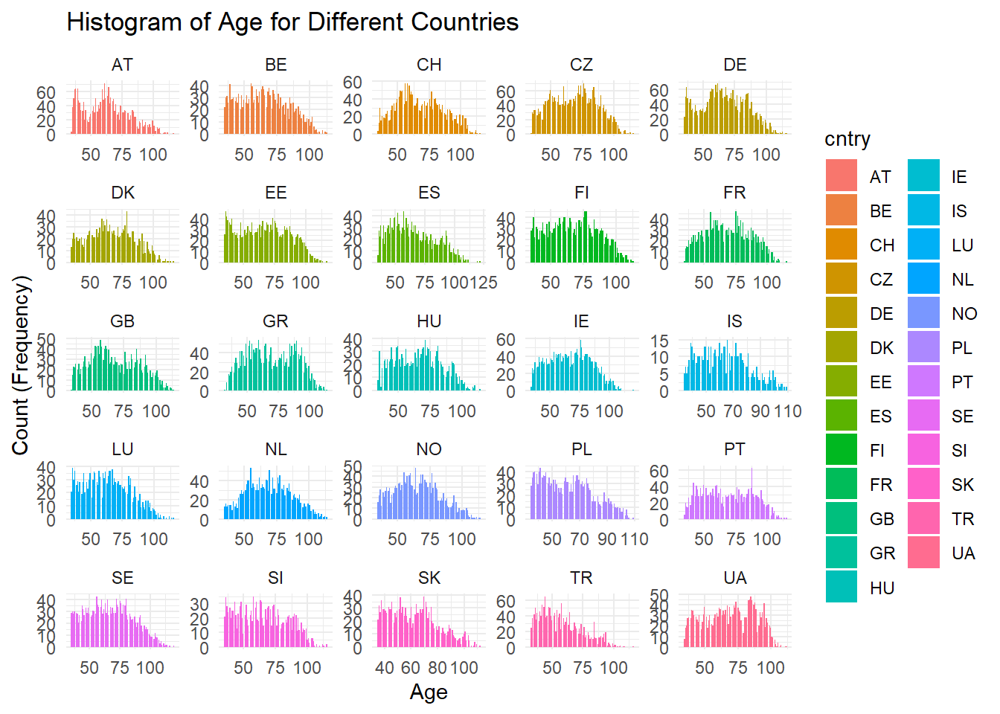
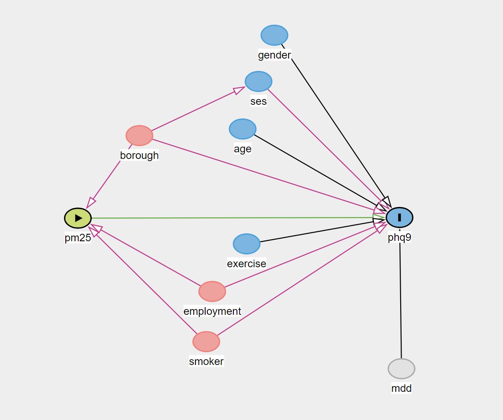

<!DOCTYPE html>
<html xmlns="http://www.w3.org/1999/xhtml" lang="en" xml:lang="en"><head>

<meta charset="utf-8">
<meta name="generator" content="quarto-1.5.57">

<meta name="viewport" content="width=device-width, initial-scale=1.0, user-scalable=yes">

<meta name="author" content="Zhuoyuan Tang">

<title>4&nbsp; Reflective_model – Zhuoyuan Tang--eportfolio</title>
<style>
code{white-space: pre-wrap;}
span.smallcaps{font-variant: small-caps;}
div.columns{display: flex; gap: min(4vw, 1.5em);}
div.column{flex: auto; overflow-x: auto;}
div.hanging-indent{margin-left: 1.5em; text-indent: -1.5em;}
ul.task-list{list-style: none;}
ul.task-list li input[type="checkbox"] {
  width: 0.8em;
  margin: 0 0.8em 0.2em -1em; /* quarto-specific, see https://github.com/quarto-dev/quarto-cli/issues/4556 */ 
  vertical-align: middle;
}
/* CSS for syntax highlighting */
pre > code.sourceCode { white-space: pre; position: relative; }
pre > code.sourceCode > span { line-height: 1.25; }
pre > code.sourceCode > span:empty { height: 1.2em; }
.sourceCode { overflow: visible; }
code.sourceCode > span { color: inherit; text-decoration: inherit; }
div.sourceCode { margin: 1em 0; }
pre.sourceCode { margin: 0; }
@media screen {
div.sourceCode { overflow: auto; }
}
@media print {
pre > code.sourceCode { white-space: pre-wrap; }
pre > code.sourceCode > span { display: inline-block; text-indent: -5em; padding-left: 5em; }
}
pre.numberSource code
  { counter-reset: source-line 0; }
pre.numberSource code > span
  { position: relative; left: -4em; counter-increment: source-line; }
pre.numberSource code > span > a:first-child::before
  { content: counter(source-line);
    position: relative; left: -1em; text-align: right; vertical-align: baseline;
    border: none; display: inline-block;
    -webkit-touch-callout: none; -webkit-user-select: none;
    -khtml-user-select: none; -moz-user-select: none;
    -ms-user-select: none; user-select: none;
    padding: 0 4px; width: 4em;
  }
pre.numberSource { margin-left: 3em;  padding-left: 4px; }
div.sourceCode
  {   }
@media screen {
pre > code.sourceCode > span > a:first-child::before { text-decoration: underline; }
}
/* CSS for citations */
div.csl-bib-body { }
div.csl-entry {
  clear: both;
  margin-bottom: 0em;
}
.hanging-indent div.csl-entry {
  margin-left:2em;
  text-indent:-2em;
}
div.csl-left-margin {
  min-width:2em;
  float:left;
}
div.csl-right-inline {
  margin-left:2em;
  padding-left:1em;
}
div.csl-indent {
  margin-left: 2em;
}</style>


<script src="site_libs/quarto-nav/quarto-nav.js"></script>
<script src="site_libs/quarto-nav/headroom.min.js"></script>
<script src="site_libs/clipboard/clipboard.min.js"></script>
<script src="site_libs/quarto-search/autocomplete.umd.js"></script>
<script src="site_libs/quarto-search/fuse.min.js"></script>
<script src="site_libs/quarto-search/quarto-search.js"></script>
<meta name="quarto:offset" content="./">
<link href="./edu_career_goals.html" rel="next">
<link href="./action_plan.html" rel="prev">
<script src="site_libs/quarto-html/quarto.js"></script>
<script src="site_libs/quarto-html/popper.min.js"></script>
<script src="site_libs/quarto-html/tippy.umd.min.js"></script>
<script src="site_libs/quarto-html/anchor.min.js"></script>
<link href="site_libs/quarto-html/tippy.css" rel="stylesheet">
<link href="site_libs/quarto-html/quarto-syntax-highlighting.css" rel="stylesheet" id="quarto-text-highlighting-styles">
<script src="site_libs/bootstrap/bootstrap.min.js"></script>
<link href="site_libs/bootstrap/bootstrap-icons.css" rel="stylesheet">
<link href="site_libs/bootstrap/bootstrap.min.css" rel="stylesheet" id="quarto-bootstrap" data-mode="light">
<script id="quarto-search-options" type="application/json">{
  "location": "sidebar",
  "copy-button": false,
  "collapse-after": 3,
  "panel-placement": "start",
  "type": "textbox",
  "limit": 50,
  "keyboard-shortcut": [
    "f",
    "/",
    "s"
  ],
  "show-item-context": false,
  "language": {
    "search-no-results-text": "No results",
    "search-matching-documents-text": "matching documents",
    "search-copy-link-title": "Copy link to search",
    "search-hide-matches-text": "Hide additional matches",
    "search-more-match-text": "more match in this document",
    "search-more-matches-text": "more matches in this document",
    "search-clear-button-title": "Clear",
    "search-text-placeholder": "",
    "search-detached-cancel-button-title": "Cancel",
    "search-submit-button-title": "Submit",
    "search-label": "Search"
  }
}</script>


<link rel="stylesheet" href="Table_style.css">
<link rel="stylesheet" href="Box_style.css">
</head>

<body class="nav-sidebar floating">

<div id="quarto-search-results"></div>
  <header id="quarto-header" class="headroom fixed-top">
  <nav class="quarto-secondary-nav">
    <div class="container-fluid d-flex">
      <button type="button" class="quarto-btn-toggle btn" data-bs-toggle="collapse" role="button" data-bs-target=".quarto-sidebar-collapse-item" aria-controls="quarto-sidebar" aria-expanded="false" aria-label="Toggle sidebar navigation" onclick="if (window.quartoToggleHeadroom) { window.quartoToggleHeadroom(); }">
        <i class="bi bi-layout-text-sidebar-reverse"></i>
      </button>
        <nav class="quarto-page-breadcrumbs" aria-label="breadcrumb"><ol class="breadcrumb"><li class="breadcrumb-item"><a href="./reflective_model.html"><span class="chapter-number">4</span>&nbsp; <span class="chapter-title">Reflective_model</span></a></li></ol></nav>
        <a class="flex-grow-1" role="navigation" data-bs-toggle="collapse" data-bs-target=".quarto-sidebar-collapse-item" aria-controls="quarto-sidebar" aria-expanded="false" aria-label="Toggle sidebar navigation" onclick="if (window.quartoToggleHeadroom) { window.quartoToggleHeadroom(); }">      
        </a>
      <button type="button" class="btn quarto-search-button" aria-label="Search" onclick="window.quartoOpenSearch();">
        <i class="bi bi-search"></i>
      </button>
    </div>
  </nav>
</header>
<!-- content -->
<div id="quarto-content" class="quarto-container page-columns page-rows-contents page-layout-article">
<!-- sidebar -->
  <nav id="quarto-sidebar" class="sidebar collapse collapse-horizontal quarto-sidebar-collapse-item sidebar-navigation floating overflow-auto">
    <div class="pt-lg-2 mt-2 text-left sidebar-header">
    <div class="sidebar-title mb-0 py-0">
      <a href="./">Zhuoyuan Tang–eportfolio</a> 
    </div>
      </div>
        <div class="mt-2 flex-shrink-0 align-items-center">
        <div class="sidebar-search">
        <div id="quarto-search" class="" title="Search"></div>
        </div>
        </div>
    <div class="sidebar-menu-container"> 
    <ul class="list-unstyled mt-1">
        <li class="sidebar-item">
  <div class="sidebar-item-container"> 
  <a href="./index.html" class="sidebar-item-text sidebar-link">
 <span class="menu-text">Welcome</span></a>
  </div>
</li>
        <li class="sidebar-item">
  <div class="sidebar-item-container"> 
  <a href="./intro.html" class="sidebar-item-text sidebar-link">
 <span class="menu-text">Introduction</span></a>
  </div>
</li>
        <li class="sidebar-item">
  <div class="sidebar-item-container"> 
  <a href="./cv.html" class="sidebar-item-text sidebar-link">
 <span class="menu-text"><span class="chapter-number">1</span>&nbsp; <span class="chapter-title">CV</span></span></a>
  </div>
</li>
        <li class="sidebar-item">
  <div class="sidebar-item-container"> 
  <a href="./SWOT.html" class="sidebar-item-text sidebar-link">
 <span class="menu-text"><span class="chapter-number">2</span>&nbsp; <span class="chapter-title">SWOT</span></span></a>
  </div>
</li>
        <li class="sidebar-item">
  <div class="sidebar-item-container"> 
  <a href="./action_plan.html" class="sidebar-item-text sidebar-link">
 <span class="menu-text"><span class="chapter-number">3</span>&nbsp; <span class="chapter-title">Action Plan</span></span></a>
  </div>
</li>
        <li class="sidebar-item">
  <div class="sidebar-item-container"> 
  <a href="./reflective_model.html" class="sidebar-item-text sidebar-link active">
 <span class="menu-text"><span class="chapter-number">4</span>&nbsp; <span class="chapter-title">Reflective_model</span></span></a>
  </div>
</li>
        <li class="sidebar-item">
  <div class="sidebar-item-container"> 
  <a href="./edu_career_goals.html" class="sidebar-item-text sidebar-link">
 <span class="menu-text"><span class="chapter-number">5</span>&nbsp; <span class="chapter-title">Education and Career Goals</span></span></a>
  </div>
</li>
        <li class="sidebar-item">
  <div class="sidebar-item-container"> 
  <a href="./summary.html" class="sidebar-item-text sidebar-link">
 <span class="menu-text"><span class="chapter-number">6</span>&nbsp; <span class="chapter-title">Summary</span></span></a>
  </div>
</li>
        <li class="sidebar-item">
  <div class="sidebar-item-container"> 
  <a href="./references.html" class="sidebar-item-text sidebar-link">
 <span class="menu-text">References</span></a>
  </div>
</li>
    </ul>
    </div>
</nav>
<div id="quarto-sidebar-glass" class="quarto-sidebar-collapse-item" data-bs-toggle="collapse" data-bs-target=".quarto-sidebar-collapse-item"></div>
<!-- margin-sidebar -->
    <div id="quarto-margin-sidebar" class="sidebar margin-sidebar">
        <nav id="TOC" role="doc-toc" class="toc-active">
    <h2 id="toc-title">Table of contents</h2>
   
  <ul>
  <li><a href="#starr-model-reflection" id="toc-starr-model-reflection" class="nav-link active" data-scroll-target="#starr-model-reflection">STARR Model Reflection</a></li>
  <li><a href="#reflection-on-swot-action-plan-and-transition-to-the-msc" id="toc-reflection-on-swot-action-plan-and-transition-to-the-msc" class="nav-link" data-scroll-target="#reflection-on-swot-action-plan-and-transition-to-the-msc">Reflection on SWOT, Action Plan, and Transition to the MSc</a></li>
  <li><a href="#msc-modules" id="toc-msc-modules" class="nav-link" data-scroll-target="#msc-modules">MSc Modules</a></li>
  <li><a href="#research-project" id="toc-research-project" class="nav-link" data-scroll-target="#research-project">Research Project</a></li>
  <li><a href="#seminars-across-the-four-domains" id="toc-seminars-across-the-four-domains" class="nav-link" data-scroll-target="#seminars-across-the-four-domains">Seminars Across the Four Domains</a></li>
  <li><a href="#personal-effectiveness" id="toc-personal-effectiveness" class="nav-link" data-scroll-target="#personal-effectiveness">Personal Effectiveness:</a></li>
  <li><a href="#employability" id="toc-employability" class="nav-link" data-scroll-target="#employability">Employability:</a></li>
  <li><a href="#academic-development" id="toc-academic-development" class="nav-link" data-scroll-target="#academic-development">Academic Development:</a></li>
  <li><a href="#research-development" id="toc-research-development" class="nav-link" data-scroll-target="#research-development">Research Development:</a></li>
  </ul>
</nav>
    </div>
<!-- main -->
<main class="content" id="quarto-document-content">

<header id="title-block-header" class="quarto-title-block default">
<div class="quarto-title">
<h1 class="title"><span class="chapter-number">4</span>&nbsp; <span class="chapter-title">Reflective_model</span></h1>
</div>


<div class="quarto-title-meta">

    <div>
    <div class="quarto-title-meta-heading">Author</div>
    <div class="quarto-title-meta-contents">
             <p>Zhuoyuan Tang </p>
          </div>
  </div>
    
  
    
  </div>
  


</header>


<style>
  body {
  background: linear-gradient(135deg, #f0f0f0 0%, #d9d9d9 50%, #bfbfbf 100%);
  color: #333; 
  position: relative;
  z-index: 0;
  margin: 0;
  padding: 0;
  min-height: 100vh;
  }

  body::before {
    content: "";
    position: fixed;
    top: 0%;
    left: 50%;
    width: 100vw;   /* 控制图像宽度 */
    height: 100vh;  /* 控制图像高度 */
    background-image: url("pictures/instance1.png");
    background-size: contain;   /* 保持比例缩放 */
    background-repeat: no-repeat;
    background-position: center;
    transform: translate(-50%, -50%);  /* 居中 */
    opacity: 0.5; /* 设置透明度 */
    z-index: -1;
  }
</style>
<section id="starr-model-reflection" class="level1 unnumbered" style="text-align: center;">
<h1 class="unnumbered">STARR Model Reflection</h1>
</section>
<p>I selected the STARR model for my ePortfolio reflection due to its clear, structured approach that facilitates a comprehensive and systematic review of experiences and growth. The five-step process—Situation, Task, Action, Result, and Reflection—enables me to deeply analyze each phase of my experiences, thereby identifying areas for improvement more effectively. Compared to other reflective models, STARR offers a targeted framework that encourages critical thinking at every stage, making it especially suitable for tracking my development throughout the MSc program.</p>
<div class="tabset-margin-container"></div><div class="panel-tabset">
<ul class="nav nav-tabs" role="tablist"><li class="nav-item" role="presentation"><a class="nav-link active" id="tabset-1-1-tab" data-bs-toggle="tab" data-bs-target="#tabset-1-1" role="tab" aria-controls="tabset-1-1" aria-selected="true">1. Situation</a></li><li class="nav-item" role="presentation"><a class="nav-link" id="tabset-1-2-tab" data-bs-toggle="tab" data-bs-target="#tabset-1-2" role="tab" aria-controls="tabset-1-2" aria-selected="false">2. Task</a></li><li class="nav-item" role="presentation"><a class="nav-link" id="tabset-1-3-tab" data-bs-toggle="tab" data-bs-target="#tabset-1-3" role="tab" aria-controls="tabset-1-3" aria-selected="false">3. Action</a></li><li class="nav-item" role="presentation"><a class="nav-link" id="tabset-1-4-tab" data-bs-toggle="tab" data-bs-target="#tabset-1-4" role="tab" aria-controls="tabset-1-4" aria-selected="false">4. Results</a></li><li class="nav-item" role="presentation"><a class="nav-link" id="tabset-1-5-tab" data-bs-toggle="tab" data-bs-target="#tabset-1-5" role="tab" aria-controls="tabset-1-5" aria-selected="false">5. Reflection</a></li></ul>
<div class="tab-content">
<div id="tabset-1-1" class="tab-pane active" role="tabpanel" aria-labelledby="tabset-1-1-tab">
<div style="background-color: #fdedec; padding: 10px; border-radius: 5px;">
<p>I am naturally introverted and have often felt hesitant in social and academic communication, though I am capable of solving problems independently and often draw on others’ insights and methods when approaching tasks.</p>
</div>
</div>
<div id="tabset-1-2" class="tab-pane" role="tabpanel" aria-labelledby="tabset-1-2-tab">
<div style="background-color: #f4ecf7; padding: 10px; border-radius: 5px;">
<p>My primary objectives are to successfully complete the MSc programme, strengthen my coding and data analysis capabilities, improve my communication skills, and build greater confidence both academically and professionally.</p>
</div>
</div>
<div id="tabset-1-3" class="tab-pane" role="tabpanel" aria-labelledby="tabset-1-3-tab">
<div style="background-color: #ebf5fb; padding: 10px; border-radius: 5px;">
<p>I plan to engage more proactively in classes and group projects, seek out innovative learning methods, and consistently practice programming and communication skills to enhance my overall learning efficiency and competencies.</p>
</div>
</div>
<div id="tabset-1-4" class="tab-pane" role="tabpanel" aria-labelledby="tabset-1-4-tab">
<div style="background-color: #eafaf1; padding: 10px; border-radius: 5px;">
<p>By actively participating in academic and collaborative activities, I aim to overcome communication barriers, acquire advanced technical and programming skills, and gain confidence in team-based and research-oriented environments.</p>
</div>
</div>
<div id="tabset-1-5" class="tab-pane" role="tabpanel" aria-labelledby="tabset-1-5-tab">
<div style="background-color: #fef9e7; padding: 10px; border-radius: 5px;">
<p>This reflective process has underscored the value of communication and collaboration. Although I began with limited confidence in expressing myself, consistent practice and active engagement have markedly improved my ability to share ideas and work within teams. Furthermore, exposure to innovative methods and deeper analytical approaches during projects has not only enriched my learning experience but also honed my problem-solving skills. This journey has reinforced my belief that proactive participation and deliberate practice are vital to personal and professional growth, and has motivated me to maintain this mindset throughout my MSc and future career.</p>
</div>
</div>
</div>
</div>
<hr>
<section id="reflection-on-swot-action-plan-and-transition-to-the-msc" class="level1 unnumbered" style="text-align: center;">
<h1 class="unnumbered">Reflection on SWOT, Action Plan, and Transition to the MSc</h1>
</section>
<div class="callout callout-style-default callout-note callout-titled">
<div class="callout-header d-flex align-content-center" data-bs-toggle="collapse" data-bs-target=".callout-1-contents" aria-controls="callout-1" aria-expanded="false" aria-label="Toggle callout">
<div class="callout-icon-container">
<i class="callout-icon"></i>
</div>
<div class="callout-title-container flex-fill">
Reflection on SWOT, Action Plan, and Transition to the MSc
</div>
<div class="callout-btn-toggle d-inline-block border-0 py-1 ps-1 pe-0 float-end"><i class="callout-toggle"></i></div>
</div>
<div id="callout-1" class="callout-1-contents callout-collapse collapse">
<div class="callout-body-container callout-body">
<div style="background-color: #e8f6f3; padding: 10px; border-radius: 5px;">
<p>Conducting a SWOT analysis and developing a subsequent action plan has allowed me to gain a clearer understanding of my strengths, weaknesses, and future direction. These exercises, informed by my undergraduate achievements and experiences, helped me inventory my existing skills, identify competency gaps, and recognize both opportunities and challenges in my academic and professional journey. As I transition into the MSc programme, these plans will serve as a roadmap, enabling me to systematically improve my programming and communication skills, thereby laying a solid foundation for research projects and long-term development.</p>
</div>
<div style="background-color: #fbeee6; padding: 10px; border-radius: 5px;">
<p>The SWOT analysis was particularly revealing: it helped me recognize that my introversion could hinder communication and collaboration, but also highlighted my aptitude for data science and strong motivation for learning and growth. As an international student, studying abroad presents a significant opportunity to develop my communication skills and adapt to a new academic culture. My action plan outlines concrete steps—such as increasing class participation, enhancing English proficiency, and dedicating time to programming practice—that will help me convert these insights into tangible progress, thereby boosting my confidence in tackling these challenges.</p>
</div>
<div style="background-color: #eaecee; padding: 10px; border-radius: 5px;">
<p>In my ePortfolio, I intend to demonstrate my readiness and enthusiasm for the MSc project—and ultimately, a PhD or research career—by aligning my goals with specific, actionable plans for growth. This process of reflection has not only deepened my self-awareness but also helped me articulate my learning motivations and professional expectations more clearly. By doing so, I aim to present a coherent narrative of personal and academic development, illustrating my preparedness for the MSc programme and my commitment to future achievements.</p>
</div>
</div>
</div>
</div>
<hr>
<section id="msc-modules" class="level1 unnumbered" style="text-align: center;">
<h1 class="unnumbered">MSc Modules</h1>
</section>
<div class="tabset-margin-container"></div><div class="panel-tabset">
<ul class="nav nav-tabs" role="tablist"><li class="nav-item" role="presentation"><a class="nav-link active" id="tabset-2-1-tab" data-bs-toggle="tab" data-bs-target="#tabset-2-1" role="tab" aria-controls="tabset-2-1" aria-selected="true">Term (Semester) 1 Modules</a></li><li class="nav-item" role="presentation"><a class="nav-link" id="tabset-2-2-tab" data-bs-toggle="tab" data-bs-target="#tabset-2-2" role="tab" aria-controls="tabset-2-2" aria-selected="false">Term (Semester) 2 Modules</a></li><li class="nav-item" role="presentation"><a class="nav-link" id="tabset-2-3-tab" data-bs-toggle="tab" data-bs-target="#tabset-2-3" role="tab" aria-controls="tabset-2-3" aria-selected="false">Term (Semester) 3 Modules</a></li></ul>
<div class="tab-content">
<div id="tabset-2-1" class="tab-pane active" role="tabpanel" aria-labelledby="tabset-2-1-tab">
<div style="background-color: #E6E6FA; padding: 10px; border-radius: 5px;">
<ul>
<li><p><strong>Introduction to Statistical Programming   (7PAVITPR)</strong></p></li>
<li><p><strong>Introduction to Statistical Modelling   (7PAVITSM)</strong></p></li>
<li><p><strong>Introduction to Health Informatics   (7PAVITHI)</strong></p></li>
</ul>
</div>
<div class="callout callout-style-default callout-note callout-titled">
<div class="callout-header d-flex align-content-center" data-bs-toggle="collapse" data-bs-target=".callout-5-contents" aria-controls="callout-5" aria-expanded="false" aria-label="Toggle callout">
<div class="callout-icon-container">
<i class="callout-icon"></i>
</div>
<div class="callout-title-container flex-fill">
Reflection on Semester 1
</div>
<div class="callout-btn-toggle d-inline-block border-0 py-1 ps-1 pe-0 float-end"><i class="callout-toggle"></i></div>
</div>
<div id="callout-5" class="callout-5-contents callout-collapse collapse">
<div class="callout-body-container callout-body">
<p>▪ <strong>Statistical programming</strong> enables me to master the basic knowledge of some programming languages, improve the ability to use programming tools (R and Python) for data processing and analysis, and lay the foundation for subsequent modeling and health data analysis. Below are the basic statistical distribution and visualization methods that I have learned in this course:</p>
<div class="callout callout-style-default callout-tip callout-titled">
<div class="callout-header d-flex align-content-center" data-bs-toggle="collapse" data-bs-target=".callout-2-contents" aria-controls="callout-2" aria-expanded="false" aria-label="Toggle callout">
<div class="callout-icon-container">
<i class="callout-icon"></i>
</div>
<div class="callout-title-container flex-fill">
Instance for Statistical programming
</div>
<div class="callout-btn-toggle d-inline-block border-0 py-1 ps-1 pe-0 float-end"><i class="callout-toggle"></i></div>
</div>
<div id="callout-2" class="callout-2-contents callout-collapse collapse">
<div class="callout-body-container callout-body">
<p><strong>For R section</strong>:</p>
<div class="cell">
<div class="sourceCode cell-code" id="cb1"><pre class="sourceCode r code-with-copy"><code class="sourceCode r"><span id="cb1-1"><a href="#cb1-1" aria-hidden="true" tabindex="-1"></a><span class="fu">library</span>(here)</span>
<span id="cb1-2"><a href="#cb1-2" aria-hidden="true" tabindex="-1"></a><span class="fu">library</span>(haven)</span>
<span id="cb1-3"><a href="#cb1-3" aria-hidden="true" tabindex="-1"></a><span class="fu">library</span>(tidyverse)</span>
<span id="cb1-4"><a href="#cb1-4" aria-hidden="true" tabindex="-1"></a><span class="fu">library</span>(dplyr)</span>
<span id="cb1-5"><a href="#cb1-5" aria-hidden="true" tabindex="-1"></a><span class="fu">library</span>(ggplot2)</span>
<span id="cb1-6"><a href="#cb1-6" aria-hidden="true" tabindex="-1"></a><span class="fu">library</span>(moments)</span>
<span id="cb1-7"><a href="#cb1-7" aria-hidden="true" tabindex="-1"></a><span class="fu">library</span>(e1071)</span>
<span id="cb1-8"><a href="#cb1-8" aria-hidden="true" tabindex="-1"></a></span>
<span id="cb1-9"><a href="#cb1-9" aria-hidden="true" tabindex="-1"></a><span class="co">#Plot histogram of age &amp; age for different countries.</span></span>
<span id="cb1-10"><a href="#cb1-10" aria-hidden="true" tabindex="-1"></a><span class="co">#par(mfrow = c(1, 2)) used for based plot on single figure</span></span>
<span id="cb1-11"><a href="#cb1-11" aria-hidden="true" tabindex="-1"></a>hist_age <span class="ot">&lt;-</span> new_df <span class="sc">|&gt;</span></span>
<span id="cb1-12"><a href="#cb1-12" aria-hidden="true" tabindex="-1"></a><span class="fu">drop_na</span>(age) <span class="sc">|&gt;</span> <span class="co">#exclude missing values</span></span>
<span id="cb1-13"><a href="#cb1-13" aria-hidden="true" tabindex="-1"></a><span class="fu">ggplot</span>() <span class="sc">+</span></span>
<span id="cb1-14"><a href="#cb1-14" aria-hidden="true" tabindex="-1"></a><span class="fu">aes</span>(<span class="at">x=</span> age) <span class="sc">+</span></span>
<span id="cb1-15"><a href="#cb1-15" aria-hidden="true" tabindex="-1"></a><span class="fu">geom_histogram</span>(<span class="at">binwidth =</span> <span class="fl">0.8</span>, <span class="at">color =</span> <span class="st">"black"</span>, <span class="at">fill =</span> <span class="st">"purple"</span>) <span class="sc">+</span> <span class="co">#Set color and other styles free</span></span>
<span id="cb1-16"><a href="#cb1-16" aria-hidden="true" tabindex="-1"></a><span class="fu">labs</span>(<span class="at">title =</span> <span class="st">"Histogram of Age"</span>, <span class="at">x=</span> <span class="st">"Age"</span>, <span class="at">y=</span> <span class="st">"Count (Frequency)"</span>) <span class="sc">+</span></span>
<span id="cb1-17"><a href="#cb1-17" aria-hidden="true" tabindex="-1"></a><span class="fu">theme_minimal</span>()</span>
<span id="cb1-18"><a href="#cb1-18" aria-hidden="true" tabindex="-1"></a>hist_age</span>
<span id="cb1-19"><a href="#cb1-19" aria-hidden="true" tabindex="-1"></a></span>
<span id="cb1-20"><a href="#cb1-20" aria-hidden="true" tabindex="-1"></a>hist_age_countries <span class="ot">&lt;-</span> new_df <span class="sc">|&gt;</span></span>
<span id="cb1-21"><a href="#cb1-21" aria-hidden="true" tabindex="-1"></a>  <span class="fu">drop_na</span>(age) <span class="sc">|&gt;</span> <span class="co"># exclude missing values</span></span>
<span id="cb1-22"><a href="#cb1-22" aria-hidden="true" tabindex="-1"></a>  <span class="fu">ggplot</span>() <span class="sc">+</span></span>
<span id="cb1-23"><a href="#cb1-23" aria-hidden="true" tabindex="-1"></a>  <span class="fu">aes</span>(<span class="at">x =</span> age, <span class="at">fill =</span> cntry) <span class="sc">+</span></span>
<span id="cb1-24"><a href="#cb1-24" aria-hidden="true" tabindex="-1"></a>  <span class="fu">geom_histogram</span>(<span class="at">binwidth =</span> <span class="fl">0.8</span>) <span class="sc">+</span></span>
<span id="cb1-25"><a href="#cb1-25" aria-hidden="true" tabindex="-1"></a>  <span class="fu">labs</span>(<span class="at">title =</span> <span class="st">"Histogram of Age for Different Countries"</span>, <span class="at">x =</span> <span class="st">"Age"</span>, <span class="at">y =</span> <span class="st">"Count (Frequency)"</span>) <span class="sc">+</span></span>
<span id="cb1-26"><a href="#cb1-26" aria-hidden="true" tabindex="-1"></a>  <span class="fu">facet_wrap</span>(<span class="sc">~</span> cntry, <span class="at">scales =</span> <span class="st">"free"</span>) <span class="sc">+</span>    <span class="co"># Subplot by using facet_wrap, and set scales free for x and y axis.</span></span>
<span id="cb1-27"><a href="#cb1-27" aria-hidden="true" tabindex="-1"></a>  <span class="fu">theme_minimal</span>()</span>
<span id="cb1-28"><a href="#cb1-28" aria-hidden="true" tabindex="-1"></a></span>
<span id="cb1-29"><a href="#cb1-29" aria-hidden="true" tabindex="-1"></a>hist_age_countries</span></code><button title="Copy to Clipboard" class="code-copy-button"><i class="bi"></i></button></pre></div>
</div>
<p> </p>
<p><strong>For Python section</strong>:</p>
<div class="cell">
<div class="sourceCode cell-code" id="cb2"><pre class="sourceCode python code-with-copy"><code class="sourceCode python"><span id="cb2-1"><a href="#cb2-1" aria-hidden="true" tabindex="-1"></a><span class="co"># Import library</span></span>
<span id="cb2-2"><a href="#cb2-2" aria-hidden="true" tabindex="-1"></a><span class="im">import</span> numpy <span class="im">as</span> np</span>
<span id="cb2-3"><a href="#cb2-3" aria-hidden="true" tabindex="-1"></a><span class="im">import</span> pandas <span class="im">as</span> pd</span>
<span id="cb2-4"><a href="#cb2-4" aria-hidden="true" tabindex="-1"></a><span class="im">import</span> matplotlib.pyplot <span class="im">as</span> plt</span>
<span id="cb2-5"><a href="#cb2-5" aria-hidden="true" tabindex="-1"></a></span>
<span id="cb2-6"><a href="#cb2-6" aria-hidden="true" tabindex="-1"></a><span class="co"># Plot scatter, show relationship between Height and Weight for different category</span></span>
<span id="cb2-7"><a href="#cb2-7" aria-hidden="true" tabindex="-1"></a></span>
<span id="cb2-8"><a href="#cb2-8" aria-hidden="true" tabindex="-1"></a><span class="co"># Plot</span></span>
<span id="cb2-9"><a href="#cb2-9" aria-hidden="true" tabindex="-1"></a>category_values <span class="op">=</span> [<span class="dv">0</span>, <span class="dv">1</span>, <span class="dv">2</span>, <span class="dv">3</span>]</span>
<span id="cb2-10"><a href="#cb2-10" aria-hidden="true" tabindex="-1"></a>colors <span class="op">=</span> [<span class="st">'lightblue'</span>, <span class="st">'green'</span>, <span class="st">'purple'</span>, <span class="st">'orange'</span>]</span>
<span id="cb2-11"><a href="#cb2-11" aria-hidden="true" tabindex="-1"></a>labels <span class="op">=</span> [<span class="st">'0: underweight'</span>, <span class="st">'1: healthy weight'</span>, <span class="st">'2: overweight'</span>, <span class="st">'3: obese'</span>]</span>
<span id="cb2-12"><a href="#cb2-12" aria-hidden="true" tabindex="-1"></a></span>
<span id="cb2-13"><a href="#cb2-13" aria-hidden="true" tabindex="-1"></a><span class="co"># Use loop instead of one by one</span></span>
<span id="cb2-14"><a href="#cb2-14" aria-hidden="true" tabindex="-1"></a><span class="cf">for</span> i <span class="kw">in</span> <span class="bu">range</span>(<span class="dv">4</span>):</span>
<span id="cb2-15"><a href="#cb2-15" aria-hidden="true" tabindex="-1"></a>    x <span class="op">=</span> df_preprocess[df_preprocess[<span class="st">"Category"</span>] <span class="op">==</span> i][<span class="st">"Height"</span>]</span>
<span id="cb2-16"><a href="#cb2-16" aria-hidden="true" tabindex="-1"></a>    y <span class="op">=</span> df_preprocess[df_preprocess[<span class="st">"Category"</span>] <span class="op">==</span> i][<span class="st">"Weight"</span>]</span>
<span id="cb2-17"><a href="#cb2-17" aria-hidden="true" tabindex="-1"></a>    plt.scatter(x, y, alpha <span class="op">=</span> <span class="fl">0.8</span>, color <span class="op">=</span> colors[i], label <span class="op">=</span> labels[i])  <span class="co"># Set different label and colour</span></span>
<span id="cb2-18"><a href="#cb2-18" aria-hidden="true" tabindex="-1"></a>    </span>
<span id="cb2-19"><a href="#cb2-19" aria-hidden="true" tabindex="-1"></a>    slope, intercept <span class="op">=</span> np.polyfit(x, y, <span class="dv">1</span>)</span>
<span id="cb2-20"><a href="#cb2-20" aria-hidden="true" tabindex="-1"></a>    plt.plot(x, slope <span class="op">*</span> x <span class="op">+</span> intercept, color <span class="op">=</span> colors[i], label <span class="op">=</span> labels[i]) <span class="co"># Draw the regression line</span></span>
<span id="cb2-21"><a href="#cb2-21" aria-hidden="true" tabindex="-1"></a>  </span>
<span id="cb2-22"><a href="#cb2-22" aria-hidden="true" tabindex="-1"></a><span class="co"># Title and label</span></span>
<span id="cb2-23"><a href="#cb2-23" aria-hidden="true" tabindex="-1"></a>plt.title(<span class="st">"Height vs Weight Scatter Plot (for Category)"</span>)</span>
<span id="cb2-24"><a href="#cb2-24" aria-hidden="true" tabindex="-1"></a>plt.xlabel(<span class="st">'Height (cm)'</span>)</span>
<span id="cb2-25"><a href="#cb2-25" aria-hidden="true" tabindex="-1"></a>plt.ylabel(<span class="st">'Weight (kg)'</span>)</span>
<span id="cb2-26"><a href="#cb2-26" aria-hidden="true" tabindex="-1"></a>plt.xticks(rotation <span class="op">=</span> <span class="dv">45</span>)  <span class="co"># Rotate the X-axis label</span></span>
<span id="cb2-27"><a href="#cb2-27" aria-hidden="true" tabindex="-1"></a></span>
<span id="cb2-28"><a href="#cb2-28" aria-hidden="true" tabindex="-1"></a><span class="co"># Add legend for categorise</span></span>
<span id="cb2-29"><a href="#cb2-29" aria-hidden="true" tabindex="-1"></a>plt.legend(title<span class="op">=</span><span class="st">'BMI Category'</span>, loc <span class="op">=</span> <span class="st">'best'</span>, bbox_to_anchor<span class="op">=</span>(<span class="dv">1</span>, <span class="fl">0.75</span>))</span>
<span id="cb2-30"><a href="#cb2-30" aria-hidden="true" tabindex="-1"></a></span>
<span id="cb2-31"><a href="#cb2-31" aria-hidden="true" tabindex="-1"></a><span class="co"># Presentation of the graph</span></span>
<span id="cb2-32"><a href="#cb2-32" aria-hidden="true" tabindex="-1"></a>plt.show()</span></code><button title="Copy to Clipboard" class="code-copy-button"><i class="bi"></i></button></pre></div>
</div>
<p> (Based on the result from this scatter plot for different categories, we can observe that if we keep the Height constant, the higher the value of Weight, the more likely the category is obese, followed by overweight, healthy weight, underweight. According to the regression line for each variable, under the same category condition, Height and Weight show a certain positive relationship.)</p>
<div class="cell">
<div class="sourceCode cell-code" id="cb3"><pre class="sourceCode python code-with-copy"><code class="sourceCode python"><span id="cb3-1"><a href="#cb3-1" aria-hidden="true" tabindex="-1"></a><span class="co"># Count the number of people in each BMI category for each gender</span></span>
<span id="cb3-2"><a href="#cb3-2" aria-hidden="true" tabindex="-1"></a></span>
<span id="cb3-3"><a href="#cb3-3" aria-hidden="true" tabindex="-1"></a><span class="co"># size() calculates the number of people in each BMI category for each gender and </span></span>
<span id="cb3-4"><a href="#cb3-4" aria-hidden="true" tabindex="-1"></a><span class="co"># converts the results into a DataFrame format using the unstack() method</span></span>
<span id="cb3-5"><a href="#cb3-5" aria-hidden="true" tabindex="-1"></a>category_gender_counts <span class="op">=</span> df_preprocess.groupby([<span class="st">'Gender'</span>, <span class="st">'Category'</span>]).size().unstack(fill_value<span class="op">=</span><span class="dv">0</span>)</span>
<span id="cb3-6"><a href="#cb3-6" aria-hidden="true" tabindex="-1"></a></span>
<span id="cb3-7"><a href="#cb3-7" aria-hidden="true" tabindex="-1"></a><span class="co"># Draw the bar chart</span></span>
<span id="cb3-8"><a href="#cb3-8" aria-hidden="true" tabindex="-1"></a>plot_bar <span class="op">=</span> category_gender_counts.plot(kind<span class="op">=</span><span class="st">'bar'</span>, stacked<span class="op">=</span><span class="va">False</span>, color<span class="op">=</span>[<span class="st">'skyblue'</span>, <span class="st">'lightgreen'</span>, <span class="st">'purple'</span>, <span class="st">'orange'</span>])</span>
<span id="cb3-9"><a href="#cb3-9" aria-hidden="true" tabindex="-1"></a></span>
<span id="cb3-10"><a href="#cb3-10" aria-hidden="true" tabindex="-1"></a><span class="co"># Set the title and label</span></span>
<span id="cb3-11"><a href="#cb3-11" aria-hidden="true" tabindex="-1"></a>plt.title(<span class="st">'Number of People in Each BMI Category by Different Gender'</span>)</span>
<span id="cb3-12"><a href="#cb3-12" aria-hidden="true" tabindex="-1"></a>plt.xlabel(<span class="st">'Gender'</span>)</span>
<span id="cb3-13"><a href="#cb3-13" aria-hidden="true" tabindex="-1"></a>plt.ylabel(<span class="st">'Number of People'</span>)</span>
<span id="cb3-14"><a href="#cb3-14" aria-hidden="true" tabindex="-1"></a>plt.xticks(rotation <span class="op">=</span> <span class="dv">45</span>)  <span class="co"># Rotate the X-axis label</span></span>
<span id="cb3-15"><a href="#cb3-15" aria-hidden="true" tabindex="-1"></a></span>
<span id="cb3-16"><a href="#cb3-16" aria-hidden="true" tabindex="-1"></a><span class="co"># Add categories name</span></span>
<span id="cb3-17"><a href="#cb3-17" aria-hidden="true" tabindex="-1"></a>bmi_labels <span class="op">=</span> [<span class="st">'0: underweight'</span>, <span class="st">'1: healthy weight'</span>, <span class="st">'2: overweight'</span>, <span class="st">'3: obese'</span>]</span>
<span id="cb3-18"><a href="#cb3-18" aria-hidden="true" tabindex="-1"></a></span>
<span id="cb3-19"><a href="#cb3-19" aria-hidden="true" tabindex="-1"></a>plt.legend(bmi_labels, title<span class="op">=</span><span class="st">'BMI Category'</span>, loc<span class="op">=</span><span class="st">'best'</span>, bbox_to_anchor<span class="op">=</span>(<span class="dv">1</span>, <span class="fl">0.6</span>))  <span class="co"># Add legend</span></span>
<span id="cb3-20"><a href="#cb3-20" aria-hidden="true" tabindex="-1"></a>plt.grid(axis<span class="op">=</span><span class="st">'y'</span>)  <span class="co"># Add gridlines</span></span>
<span id="cb3-21"><a href="#cb3-21" aria-hidden="true" tabindex="-1"></a>plt.tight_layout()  <span class="co"># Automaticly adjust layout </span></span>
<span id="cb3-22"><a href="#cb3-22" aria-hidden="true" tabindex="-1"></a></span>
<span id="cb3-23"><a href="#cb3-23" aria-hidden="true" tabindex="-1"></a><span class="co"># Display the value next to the bar</span></span>
<span id="cb3-24"><a href="#cb3-24" aria-hidden="true" tabindex="-1"></a><span class="cf">for</span> container <span class="kw">in</span> plot_bar.containers:</span>
<span id="cb3-25"><a href="#cb3-25" aria-hidden="true" tabindex="-1"></a>    plot_bar.bar_label(container, label_type<span class="op">=</span><span class="st">'edge'</span>)  <span class="co"># label_type='edge' Place the label above or next to the bar</span></span>
<span id="cb3-26"><a href="#cb3-26" aria-hidden="true" tabindex="-1"></a></span>
<span id="cb3-27"><a href="#cb3-27" aria-hidden="true" tabindex="-1"></a></span>
<span id="cb3-28"><a href="#cb3-28" aria-hidden="true" tabindex="-1"></a>plt.show()</span></code><button title="Copy to Clipboard" class="code-copy-button"><i class="bi"></i></button></pre></div>
</div>
<p> (According to the results of the bar chart, the number of obese people are both highest in both Female and Male, with 167 and 165 obese women and men respectively. However, underweight is the least, with the number of 13 and 21 respectively. From this, we can conclude that obese people are the main situation, and some relevant measures should be taken to reduce this phenomenon.)</p>
</div>
</div>
</div>
<p>▪ By learning <strong>statistical modelling</strong> methods, I deepened my understanding of data analysis, causation, and inference, making me more skilled in selecting and evaluating suitable statistical models for data such as significance, confidence intervals, etc.</p>
<div class="callout callout-style-default callout-tip callout-titled">
<div class="callout-header d-flex align-content-center" data-bs-toggle="collapse" data-bs-target=".callout-3-contents" aria-controls="callout-3" aria-expanded="false" aria-label="Toggle callout">
<div class="callout-icon-container">
<i class="callout-icon"></i>
</div>
<div class="callout-title-container flex-fill">
Instance for Statistical modelling
</div>
<div class="callout-btn-toggle d-inline-block border-0 py-1 ps-1 pe-0 float-end"><i class="callout-toggle"></i></div>
</div>
<div id="callout-3" class="callout-3-contents callout-collapse collapse">
<div class="callout-body-container callout-body">
<div class="quarto-figure quarto-figure-center">
<figure class="figure">
<p></p>
<figcaption>DAG Causal Mediation Diagram with Causal Paths</figcaption>
</figure>
</div>
<div class="cell">
<div class="sourceCode cell-code" id="cb4"><pre class="sourceCode r code-with-copy"><code class="sourceCode r"><span id="cb4-1"><a href="#cb4-1" aria-hidden="true" tabindex="-1"></a><span class="co"># Table 1 combine all samples together</span></span>
<span id="cb4-2"><a href="#cb4-2" aria-hidden="true" tabindex="-1"></a><span class="co"># Create a new column that indicate whether belong complete case or not</span></span>
<span id="cb4-3"><a href="#cb4-3" aria-hidden="true" tabindex="-1"></a>pollution_data <span class="ot">&lt;-</span> pollution_data <span class="sc">|&gt;</span></span>
<span id="cb4-4"><a href="#cb4-4" aria-hidden="true" tabindex="-1"></a>  <span class="fu">mutate</span>(<span class="at">complete_case =</span> <span class="fu">ifelse</span>(<span class="fu">complete.cases</span>(pollution_data), </span>
<span id="cb4-5"><a href="#cb4-5" aria-hidden="true" tabindex="-1"></a>                                <span class="st">"Analytical"</span>, <span class="st">"Excluded"</span>))</span>
<span id="cb4-6"><a href="#cb4-6" aria-hidden="true" tabindex="-1"></a></span>
<span id="cb4-7"><a href="#cb4-7" aria-hidden="true" tabindex="-1"></a>Full_table1 <span class="ot">&lt;-</span> pollution_data <span class="sc">|&gt;</span></span>
<span id="cb4-8"><a href="#cb4-8" aria-hidden="true" tabindex="-1"></a>  <span class="fu">tbl_summary</span>(<span class="at">include =</span> <span class="fu">c</span>(<span class="sc">-</span>pid),</span>
<span id="cb4-9"><a href="#cb4-9" aria-hidden="true" tabindex="-1"></a>              <span class="at">by =</span> complete_case,   <span class="co"># Separate by whether complete case</span></span>
<span id="cb4-10"><a href="#cb4-10" aria-hidden="true" tabindex="-1"></a>              <span class="at">statistic =</span> <span class="fu">list</span>(<span class="fu">all_continuous</span>() <span class="sc">~</span> </span>
<span id="cb4-11"><a href="#cb4-11" aria-hidden="true" tabindex="-1"></a>                                 <span class="st">"{mean} ({sd}) {median} ({p25}, {p75})"</span>,</span>
<span id="cb4-12"><a href="#cb4-12" aria-hidden="true" tabindex="-1"></a>                               <span class="fu">all_categorical</span>() <span class="sc">~</span> <span class="st">"{n} ({p}%)"</span>),</span>
<span id="cb4-13"><a href="#cb4-13" aria-hidden="true" tabindex="-1"></a>              <span class="at">missing_text =</span> <span class="st">"(Missing)"</span>) <span class="sc">|&gt;</span></span>
<span id="cb4-14"><a href="#cb4-14" aria-hidden="true" tabindex="-1"></a>  <span class="fu">modify_caption</span>(<span class="st">"Full Descriptive statistics ('Table 1')"</span>) <span class="sc">|&gt;</span>    <span class="co"># Add table's title</span></span>
<span id="cb4-15"><a href="#cb4-15" aria-hidden="true" tabindex="-1"></a>  <span class="fu">add_overall</span>()     <span class="co"># Include overall statistics</span></span>
<span id="cb4-16"><a href="#cb4-16" aria-hidden="true" tabindex="-1"></a></span>
<span id="cb4-17"><a href="#cb4-17" aria-hidden="true" tabindex="-1"></a>Full_table1</span></code><button title="Copy to Clipboard" class="code-copy-button"><i class="bi"></i></button></pre></div>
</div>
<p> <strong>Instance of statistical modelling:</strong></p>
<div class="cell">
<div class="sourceCode cell-code" id="cb5"><pre class="sourceCode r fold-hide code-with-copy"><code class="sourceCode r"><span id="cb5-1"><a href="#cb5-1" aria-hidden="true" tabindex="-1"></a><span class="co"># Use interaction effect without considering the variation of borough</span></span>
<span id="cb5-2"><a href="#cb5-2" aria-hidden="true" tabindex="-1"></a></span>
<span id="cb5-3"><a href="#cb5-3" aria-hidden="true" tabindex="-1"></a>m1 <span class="ot">&lt;-</span> <span class="fu">lm</span>(phq9 <span class="sc">~</span> pm25 <span class="sc">*</span> smoker <span class="sc">+</span> borough <span class="sc">+</span> employment, <span class="at">data =</span> analytical_sample)</span>
<span id="cb5-4"><a href="#cb5-4" aria-hidden="true" tabindex="-1"></a></span>
<span id="cb5-5"><a href="#cb5-5" aria-hidden="true" tabindex="-1"></a><span class="co">#m1 &lt;- lm(phq9 ~ pm25 * smoker + borough + age + ses + employment + gender + exercise, data = analytical_sample)</span></span>
<span id="cb5-6"><a href="#cb5-6" aria-hidden="true" tabindex="-1"></a></span>
<span id="cb5-7"><a href="#cb5-7" aria-hidden="true" tabindex="-1"></a><span class="fu">summary</span>(m1)</span>
<span id="cb5-8"><a href="#cb5-8" aria-hidden="true" tabindex="-1"></a></span>
<span id="cb5-9"><a href="#cb5-9" aria-hidden="true" tabindex="-1"></a><span class="co"># executive outcome</span></span>
<span id="cb5-10"><a href="#cb5-10" aria-hidden="true" tabindex="-1"></a>Fixed effects<span class="sc">:</span></span>
<span id="cb5-11"><a href="#cb5-11" aria-hidden="true" tabindex="-1"></a>                  Estimate Std. Error        df t value <span class="fu">Pr</span>(<span class="sc">&gt;</span><span class="er">|</span>t<span class="sc">|</span>)    </span>
<span id="cb5-12"><a href="#cb5-12" aria-hidden="true" tabindex="-1"></a>(Intercept)        <span class="fl">5.03689</span>    <span class="fl">0.93420</span> <span class="fl">496.55124</span>   <span class="fl">5.392</span> <span class="fl">1.08e-07</span> <span class="sc">**</span><span class="er">*</span></span>
<span id="cb5-13"><a href="#cb5-13" aria-hidden="true" tabindex="-1"></a>pm25               <span class="fl">0.22120</span>    <span class="fl">0.05517</span> <span class="fl">819.30050</span>   <span class="fl">4.010</span> <span class="fl">6.64e-05</span> <span class="sc">**</span><span class="er">*</span></span>
<span id="cb5-14"><a href="#cb5-14" aria-hidden="true" tabindex="-1"></a>employmentOffice  <span class="sc">-</span><span class="fl">1.05971</span>    <span class="fl">0.42784</span> <span class="fl">823.74867</span>  <span class="sc">-</span><span class="fl">2.477</span>   <span class="fl">0.0135</span> <span class="sc">*</span>  </span>
<span id="cb5-15"><a href="#cb5-15" aria-hidden="true" tabindex="-1"></a>smokerSmoker       <span class="fl">5.70257</span>    <span class="fl">0.35020</span> <span class="fl">815.59065</span>  <span class="fl">16.284</span>  <span class="sc">&lt;</span> <span class="fl">2e-16</span> <span class="sc">**</span><span class="er">*</span></span></code><button title="Copy to Clipboard" class="code-copy-button"><i class="bi"></i></button></pre></div>
</div>
</div>
</div>
</div>
<p>▪ The core concepts of <strong>health informatics</strong>, including electronic health records (EHRs), data standards, and privacy protection issues, gave me a more complete understanding of the challenges of healthcare data management and analysis.</p>
<div class="callout callout-style-default callout-tip callout-titled">
<div class="callout-header d-flex align-content-center" data-bs-toggle="collapse" data-bs-target=".callout-4-contents" aria-controls="callout-4" aria-expanded="false" aria-label="Toggle callout">
<div class="callout-icon-container">
<i class="callout-icon"></i>
</div>
<div class="callout-title-container flex-fill">
Instance for health informatics
</div>
<div class="callout-btn-toggle d-inline-block border-0 py-1 ps-1 pe-0 float-end"><i class="callout-toggle"></i></div>
</div>
<div id="callout-4" class="callout-4-contents callout-collapse collapse">
<div class="callout-body-container callout-body">
<p><strong>Distributions of the values across variables and outcome classes</strong></p>
<div class="cell">
<div class="sourceCode cell-code" id="cb6"><pre class="sourceCode python code-with-copy"><code class="sourceCode python"><span id="cb6-1"><a href="#cb6-1" aria-hidden="true" tabindex="-1"></a><span class="co"># Visualize the distribution in different Mortality categories for each variable</span></span>
<span id="cb6-2"><a href="#cb6-2" aria-hidden="true" tabindex="-1"></a></span>
<span id="cb6-3"><a href="#cb6-3" aria-hidden="true" tabindex="-1"></a>variable_columns <span class="op">=</span> [<span class="st">"MeanBP"</span>, <span class="st">"DiasBP"</span>, <span class="st">"SysBP"</span>, <span class="st">"Centralvenouspressure "</span>, <span class="st">"Creatinine"</span>, <span class="st">"DailyWeight"</span>, </span>
<span id="cb6-4"><a href="#cb6-4" aria-hidden="true" tabindex="-1"></a>                    <span class="st">"Glucose"</span>, <span class="st">"HeartRate"</span>, <span class="st">"Haemoglobin"</span>, <span class="st">"Platelets"</span>, <span class="st">"SpO2"</span>, <span class="st">"Temperature C"</span>]</span>
<span id="cb6-5"><a href="#cb6-5" aria-hidden="true" tabindex="-1"></a></span>
<span id="cb6-6"><a href="#cb6-6" aria-hidden="true" tabindex="-1"></a>fig, axs <span class="op">=</span> plt.subplots(<span class="dv">3</span>, <span class="dv">4</span>, tight_layout<span class="op">=</span><span class="va">True</span>)</span>
<span id="cb6-7"><a href="#cb6-7" aria-hidden="true" tabindex="-1"></a>fig.set_size_inches(<span class="dv">20</span>,<span class="dv">12</span>)</span>
<span id="cb6-8"><a href="#cb6-8" aria-hidden="true" tabindex="-1"></a>axs <span class="op">=</span> axs.ravel()   <span class="co"># Ensure that axs is a one-dimensional array</span></span>
<span id="cb6-9"><a href="#cb6-9" aria-hidden="true" tabindex="-1"></a></span>
<span id="cb6-10"><a href="#cb6-10" aria-hidden="true" tabindex="-1"></a><span class="cf">for</span> index, variable <span class="kw">in</span> <span class="bu">enumerate</span>(variable_columns):</span>
<span id="cb6-11"><a href="#cb6-11" aria-hidden="true" tabindex="-1"></a>    axs[index].hist(data_timeseries[data_timeseries[<span class="st">"Mortality"</span>] <span class="op">==</span> <span class="dv">0</span>][variable].dropna(), </span>
<span id="cb6-12"><a href="#cb6-12" aria-hidden="true" tabindex="-1"></a>                    label<span class="op">=</span><span class="st">"Live (Mortality: 0)"</span>, bins<span class="op">=</span><span class="dv">10</span>, alpha<span class="op">=</span><span class="fl">0.75</span>, color<span class="op">=</span><span class="st">"green"</span>)</span>
<span id="cb6-13"><a href="#cb6-13" aria-hidden="true" tabindex="-1"></a>    axs[index].hist(data_timeseries[data_timeseries[<span class="st">"Mortality"</span>] <span class="op">==</span> <span class="dv">1</span>][variable].dropna(), </span>
<span id="cb6-14"><a href="#cb6-14" aria-hidden="true" tabindex="-1"></a>                    label<span class="op">=</span><span class="st">"Death (Mortality: 1)"</span>, bins<span class="op">=</span><span class="dv">10</span>, alpha<span class="op">=</span><span class="fl">0.75</span>, color<span class="op">=</span><span class="st">"red"</span>)</span>
<span id="cb6-15"><a href="#cb6-15" aria-hidden="true" tabindex="-1"></a></span>
<span id="cb6-16"><a href="#cb6-16" aria-hidden="true" tabindex="-1"></a>    axs[index].legend(loc<span class="op">=</span><span class="st">'best'</span>)</span>
<span id="cb6-17"><a href="#cb6-17" aria-hidden="true" tabindex="-1"></a>    axs[index].set_title(<span class="ss">f"Distribution of </span><span class="sc">{</span>variable<span class="sc">}</span><span class="ss"> across outcome"</span>)</span>
<span id="cb6-18"><a href="#cb6-18" aria-hidden="true" tabindex="-1"></a>    axs[index].set_xlabel(variable)</span>
<span id="cb6-19"><a href="#cb6-19" aria-hidden="true" tabindex="-1"></a>    axs[index].set_ylabel(<span class="st">"frequency"</span>)</span>
<span id="cb6-20"><a href="#cb6-20" aria-hidden="true" tabindex="-1"></a>    axs[index].grid(axis<span class="op">=</span><span class="st">'y'</span>)</span>
<span id="cb6-21"><a href="#cb6-21" aria-hidden="true" tabindex="-1"></a></span>
<span id="cb6-22"><a href="#cb6-22" aria-hidden="true" tabindex="-1"></a>plt.tight_layout()</span>
<span id="cb6-23"><a href="#cb6-23" aria-hidden="true" tabindex="-1"></a>plt.show()</span></code><button title="Copy to Clipboard" class="code-copy-button"><i class="bi"></i></button></pre></div>
</div>
<p></p>
<p><strong>Missing Extent</strong></p>
<div class="cell">
<div class="sourceCode cell-code" id="cb7"><pre class="sourceCode python code-with-copy"><code class="sourceCode python"><span id="cb7-1"><a href="#cb7-1" aria-hidden="true" tabindex="-1"></a><span class="co"># Visualise the missing extent for each variable</span></span>
<span id="cb7-2"><a href="#cb7-2" aria-hidden="true" tabindex="-1"></a><span class="im">import</span> missingno <span class="im">as</span> msno</span>
<span id="cb7-3"><a href="#cb7-3" aria-hidden="true" tabindex="-1"></a></span>
<span id="cb7-4"><a href="#cb7-4" aria-hidden="true" tabindex="-1"></a>msno.bar(data_timeseries)</span>
<span id="cb7-5"><a href="#cb7-5" aria-hidden="true" tabindex="-1"></a>plt.show()</span></code><button title="Copy to Clipboard" class="code-copy-button"><i class="bi"></i></button></pre></div>
</div>
<p> <strong>Visualise changes in Mean Arterial Pressure (MAP) over time for each patient</strong></p>
<div class="cell">
<div class="sourceCode cell-code" id="cb8"><pre class="sourceCode python code-with-copy"><code class="sourceCode python"><span id="cb8-1"><a href="#cb8-1" aria-hidden="true" tabindex="-1"></a><span class="co"># Visualise changes in MAP over time for each patient</span></span>
<span id="cb8-2"><a href="#cb8-2" aria-hidden="true" tabindex="-1"></a></span>
<span id="cb8-3"><a href="#cb8-3" aria-hidden="true" tabindex="-1"></a>fig, axes  <span class="op">=</span> plt.subplots(<span class="dv">2</span>, n_cols, figsize <span class="op">=</span> (<span class="dv">20</span>, <span class="dv">10</span>))</span>
<span id="cb8-4"><a href="#cb8-4" aria-hidden="true" tabindex="-1"></a>flt <span class="op">=</span> axes.flatten()</span>
<span id="cb8-5"><a href="#cb8-5" aria-hidden="true" tabindex="-1"></a>index<span class="op">=</span><span class="dv">0</span></span>
<span id="cb8-6"><a href="#cb8-6" aria-hidden="true" tabindex="-1"></a><span class="cf">for</span> <span class="bu">id</span> <span class="kw">in</span> patient_ids:</span>
<span id="cb8-7"><a href="#cb8-7" aria-hidden="true" tabindex="-1"></a>    subset <span class="op">=</span> data_timeseries.loc[data_timeseries[<span class="st">'PatientID'</span>]<span class="op">==</span><span class="bu">id</span>]</span>
<span id="cb8-8"><a href="#cb8-8" aria-hidden="true" tabindex="-1"></a>    </span>
<span id="cb8-9"><a href="#cb8-9" aria-hidden="true" tabindex="-1"></a>    <span class="co"># Change "plot" to "step" if you want to achieve the 'stepped' look such that for each point</span></span>
<span id="cb8-10"><a href="#cb8-10" aria-hidden="true" tabindex="-1"></a>    <span class="co"># which is mentioned in our practical exercises</span></span>
<span id="cb8-11"><a href="#cb8-11" aria-hidden="true" tabindex="-1"></a>    flt[index].plot(subset[<span class="st">"Hour"</span>], subset[<span class="st">"MAP"</span>], color<span class="op">=</span><span class="st">'green'</span>, linestyle<span class="op">=</span><span class="st">'dashed'</span>, marker<span class="op">=</span><span class="st">'o'</span>, label<span class="op">=</span><span class="st">'MAP'</span>)</span>
<span id="cb8-12"><a href="#cb8-12" aria-hidden="true" tabindex="-1"></a>    </span>
<span id="cb8-13"><a href="#cb8-13" aria-hidden="true" tabindex="-1"></a>    <span class="co"># Set the threshold line (65 mmHg)</span></span>
<span id="cb8-14"><a href="#cb8-14" aria-hidden="true" tabindex="-1"></a>    flt[index].axhline(<span class="dv">65</span>, color<span class="op">=</span><span class="st">'purple'</span>, label<span class="op">=</span><span class="st">'Threshold (65 mmHg)'</span>)</span>
<span id="cb8-15"><a href="#cb8-15" aria-hidden="true" tabindex="-1"></a>    </span>
<span id="cb8-16"><a href="#cb8-16" aria-hidden="true" tabindex="-1"></a>    <span class="co"># Highlight all point that may on vasopressors</span></span>
<span id="cb8-17"><a href="#cb8-17" aria-hidden="true" tabindex="-1"></a>    flt[index].scatter(subset.Hour[subset[<span class="st">"MAP"</span>] <span class="op">&lt;</span> <span class="dv">65</span>],</span>
<span id="cb8-18"><a href="#cb8-18" aria-hidden="true" tabindex="-1"></a>                       subset.MAP[subset[<span class="st">"MAP"</span>] <span class="op">&lt;</span> <span class="dv">65</span>],</span>
<span id="cb8-19"><a href="#cb8-19" aria-hidden="true" tabindex="-1"></a>                       color <span class="op">=</span> <span class="st">"blue"</span>, label<span class="op">=</span><span class="st">"Vasopressors use"</span>, s <span class="op">=</span> <span class="dv">50</span>, zorder <span class="op">=</span> <span class="dv">2</span>) <span class="co"># "s" is sizes, "zorder" Represents the order of plotting</span></span>
<span id="cb8-20"><a href="#cb8-20" aria-hidden="true" tabindex="-1"></a></span>
<span id="cb8-21"><a href="#cb8-21" aria-hidden="true" tabindex="-1"></a>    <span class="co"># Draw and highlight the first hour at which the patient was started on vasopressors</span></span>
<span id="cb8-22"><a href="#cb8-22" aria-hidden="true" tabindex="-1"></a>    <span class="cf">if</span> <span class="kw">not</span> subset.Hour[subset[<span class="st">"MAP"</span>] <span class="op">&lt;</span> <span class="dv">65</span>].empty <span class="kw">and</span> <span class="kw">not</span> subset.MAP[subset[<span class="st">"MAP"</span>] <span class="op">&lt;</span> <span class="dv">65</span>].empty:</span>
<span id="cb8-23"><a href="#cb8-23" aria-hidden="true" tabindex="-1"></a>        flt[index].scatter(subset.Hour[subset[<span class="st">"MAP"</span>] <span class="op">&lt;</span> <span class="dv">65</span>].<span class="bu">min</span>(),</span>
<span id="cb8-24"><a href="#cb8-24" aria-hidden="true" tabindex="-1"></a>                           subset.MAP[subset[<span class="st">"MAP"</span>] <span class="op">&lt;</span> <span class="dv">65</span>].iloc[<span class="dv">0</span>],</span>
<span id="cb8-25"><a href="#cb8-25" aria-hidden="true" tabindex="-1"></a>                           color <span class="op">=</span> <span class="st">"red"</span>, label<span class="op">=</span><span class="st">"First vasopressors use"</span>, s <span class="op">=</span> <span class="dv">100</span>, zorder <span class="op">=</span> <span class="dv">3</span>)</span>
<span id="cb8-26"><a href="#cb8-26" aria-hidden="true" tabindex="-1"></a>        </span>
<span id="cb8-27"><a href="#cb8-27" aria-hidden="true" tabindex="-1"></a>        <span class="co"># Display the corresponding values in the graph</span></span>
<span id="cb8-28"><a href="#cb8-28" aria-hidden="true" tabindex="-1"></a>        flt[index].annotate(<span class="ss">f"Hour: </span><span class="sc">{</span>subset<span class="sc">.</span>Hour[subset[<span class="st">"MAP"</span>] <span class="op">&lt;</span> <span class="dv">65</span>]<span class="sc">.</span><span class="bu">min</span>()<span class="sc">}</span><span class="ch">\n</span><span class="ss">MAP: </span><span class="sc">{</span>subset<span class="sc">.</span>MAP[subset[<span class="st">"MAP"</span>] <span class="op">&lt;</span> <span class="dv">65</span>]<span class="sc">.</span>iloc[<span class="dv">0</span>]<span class="sc">: .2f}</span><span class="ss">"</span>,</span>
<span id="cb8-29"><a href="#cb8-29" aria-hidden="true" tabindex="-1"></a>                           (subset.Hour[subset[<span class="st">"MAP"</span>] <span class="op">&lt;</span> <span class="dv">65</span>].<span class="bu">min</span>(), subset.MAP[subset[<span class="st">"MAP"</span>] <span class="op">&lt;</span> <span class="dv">65</span>].iloc[<span class="dv">0</span>]))</span>
<span id="cb8-30"><a href="#cb8-30" aria-hidden="true" tabindex="-1"></a>    </span>
<span id="cb8-31"><a href="#cb8-31" aria-hidden="true" tabindex="-1"></a>    flt[index].set_title(<span class="ss">f"Patient ID: </span><span class="sc">{</span><span class="bu">id</span><span class="sc">}</span><span class="ss">"</span>)</span>
<span id="cb8-32"><a href="#cb8-32" aria-hidden="true" tabindex="-1"></a>    flt[index].set_xlabel(<span class="st">"Hour"</span>)</span>
<span id="cb8-33"><a href="#cb8-33" aria-hidden="true" tabindex="-1"></a>    flt[index].set_ylabel(<span class="st">"MAP (mmHg)"</span>)</span>
<span id="cb8-34"><a href="#cb8-34" aria-hidden="true" tabindex="-1"></a>    flt[index].legend(loc <span class="op">=</span> <span class="st">"best"</span>)</span>
<span id="cb8-35"><a href="#cb8-35" aria-hidden="true" tabindex="-1"></a>    index<span class="op">=</span>index<span class="op">+</span><span class="dv">1</span></span>
<span id="cb8-36"><a href="#cb8-36" aria-hidden="true" tabindex="-1"></a>    <span class="cf">if</span> index <span class="op">==</span> <span class="dv">10</span>:</span>
<span id="cb8-37"><a href="#cb8-37" aria-hidden="true" tabindex="-1"></a>        <span class="cf">break</span><span class="op">;</span></span>
<span id="cb8-38"><a href="#cb8-38" aria-hidden="true" tabindex="-1"></a></span>
<span id="cb8-39"><a href="#cb8-39" aria-hidden="true" tabindex="-1"></a>plt.tight_layout()</span>
<span id="cb8-40"><a href="#cb8-40" aria-hidden="true" tabindex="-1"></a>plt.show()</span></code><button title="Copy to Clipboard" class="code-copy-button"><i class="bi"></i></button></pre></div>
</div>
<p> For example, the patient who’s id is 171456, I have given the MAP variation lines (represented by green), threshold value lines (65mmHg, dashed purple), as well as all possible vasopressors applied (blue dots) and points that may apply vasopressors for the first time (red dots), and shown their corresponding values in the graph. In this patient’s case, The first time vasopressors was applied was one hour after admission, and the MAP value at that time was 56.67. The content of the visualizations is consistent with other patients.</p>
</div>
</div>
</div>
</div>
</div>
</div>
</div>
<div id="tabset-2-2" class="tab-pane" role="tabpanel" aria-labelledby="tabset-2-2-tab">
<div style="background-color: #ADD8E6; padding: 10px; border-radius: 5px;">
<ul>
<li><p><strong>Multilevel and Longitudinal Modelling   (7PAVMALM)</strong></p></li>
<li><p><strong>Prediction Modelling   (7PAVPRMD)</strong></p></li>
<li><p>Machine learning for Health and Bioinformatics   (7PAVMALE)   As an auditor</p></li>
</ul>
</div>
<div class="callout callout-style-default callout-note callout-titled">
<div class="callout-header d-flex align-content-center" data-bs-toggle="collapse" data-bs-target=".callout-8-contents" aria-controls="callout-8" aria-expanded="false" aria-label="Toggle callout">
<div class="callout-icon-container">
<i class="callout-icon"></i>
</div>
<div class="callout-title-container flex-fill">
Reflection on Semester 2
</div>
<div class="callout-btn-toggle d-inline-block border-0 py-1 ps-1 pe-0 float-end"><i class="callout-toggle"></i></div>
</div>
<div id="callout-8" class="callout-8-contents callout-collapse collapse">
<div class="callout-body-container callout-body">
<p>▪ The <strong>multimodal and longitudinal modeling</strong> courses have enabled me to master the core methods of multi-level and longitudinal data modeling, and enhanced my analytical ability in processing complex structured data with stata programming language, especially in the application of health research.</p>
<div class="callout callout-style-default callout-tip callout-titled">
<div class="callout-header d-flex align-content-center" data-bs-toggle="collapse" data-bs-target=".callout-6-contents" aria-controls="callout-6" aria-expanded="false" aria-label="Toggle callout">
<div class="callout-icon-container">
<i class="callout-icon"></i>
</div>
<div class="callout-title-container flex-fill">
Instance for multimodal and longitudinal modeling
</div>
<div class="callout-btn-toggle d-inline-block border-0 py-1 ps-1 pe-0 float-end"><i class="callout-toggle"></i></div>
</div>
<div id="callout-6" class="callout-6-contents callout-collapse collapse">
<div class="callout-body-container callout-body">
<p><strong>Longitudinal Profiles</strong></p>
<div class="cell">
<div class="sourceCode cell-code" id="cb9"><pre class="sourceCode stata code-with-copy"><code class="sourceCode stata"><span id="cb9-1"><a href="#cb9-1" aria-hidden="true" tabindex="-1"></a>* Record history and <span class="fu">log</span> files</span>
<span id="cb9-2"><a href="#cb9-2" aria-hidden="true" tabindex="-1"></a><span class="kw">capture</span> <span class="fu">log</span> <span class="kw">close</span></span>
<span id="cb9-3"><a href="#cb9-3" aria-hidden="true" tabindex="-1"></a><span class="fu">log</span> <span class="kw">using</span> analysis.<span class="fu">log</span>, <span class="kw">replace</span></span>
<span id="cb9-4"><a href="#cb9-4" aria-hidden="true" tabindex="-1"></a></span>
<span id="cb9-5"><a href="#cb9-5" aria-hidden="true" tabindex="-1"></a>* Load dataset</span>
<span id="cb9-6"><a href="#cb9-6" aria-hidden="true" tabindex="-1"></a><span class="kw">use</span> <span class="st">"Socrates_assignment dataset.dta"</span>, <span class="kw">clear</span></span>
<span id="cb9-7"><a href="#cb9-7" aria-hidden="true" tabindex="-1"></a></span>
<span id="cb9-8"><a href="#cb9-8" aria-hidden="true" tabindex="-1"></a><span class="co">// Calculate group mean</span></span>
<span id="cb9-9"><a href="#cb9-9" aria-hidden="true" tabindex="-1"></a><span class="kw">preserve</span></span>
<span id="cb9-10"><a href="#cb9-10" aria-hidden="true" tabindex="-1"></a><span class="kw">collapse</span> (<span class="kw">mean</span>) mean_panss = panss, <span class="kw">by</span>(interven time)</span>
<span id="cb9-11"><a href="#cb9-11" aria-hidden="true" tabindex="-1"></a></span>
<span id="cb9-12"><a href="#cb9-12" aria-hidden="true" tabindex="-1"></a><span class="co">// Graphical display</span></span>
<span id="cb9-13"><a href="#cb9-13" aria-hidden="true" tabindex="-1"></a><span class="kw">twoway</span> connected mean_panss time <span class="kw">if</span> interven==1, <span class="kw">sort</span> lcolor(<span class="bn">blue</span>) || <span class="co">///</span></span>
<span id="cb9-14"><a href="#cb9-14" aria-hidden="true" tabindex="-1"></a>       connected mean_panss time <span class="kw">if</span> interven==0, <span class="kw">sort</span> lcolor(<span class="kw">red</span>)    <span class="co">///</span></span>
<span id="cb9-15"><a href="#cb9-15" aria-hidden="true" tabindex="-1"></a>       <span class="kw">xlabel</span>(0 <span class="st">"Baseline"</span> 1 <span class="st">"6 weeks"</span> 2 <span class="st">"3 months"</span> 3 <span class="st">"9 months"</span> 4 <span class="st">"18 months"</span>) <span class="co">///</span></span>
<span id="cb9-16"><a href="#cb9-16" aria-hidden="true" tabindex="-1"></a>       <span class="bn">legend</span>(pos(6) <span class="kw">order</span>(1 <span class="st">"Intervention"</span> 2 <span class="st">"Control"</span>))           <span class="co">///</span></span>
<span id="cb9-17"><a href="#cb9-17" aria-hidden="true" tabindex="-1"></a>       <span class="bn">ytitle</span>(<span class="st">"Mean PANSS"</span>) <span class="bn">title</span>(<span class="st">"Longitudinal Profiles of the Mean PANSS"</span>) </span>
<span id="cb9-18"><a href="#cb9-18" aria-hidden="true" tabindex="-1"></a><span class="kw">restore</span></span></code><button title="Copy to Clipboard" class="code-copy-button"><i class="bi"></i></button></pre></div>
</div>
<div class="quarto-figure quarto-figure-center">
<figure class="figure">
<p></p>
<figcaption>Longitudinal Profiles of the Mean PANSS Measure for Control and Intervention Arm</figcaption>
</figure>
</div>
<p><strong>Kaplan-Meier survival curve analysis for two groups</strong>  Kaplan-Meier results show that the survival curve of the intervention group is always lower than that of the control group, indicating that the intervention group has a higher dropout rate, and the difference between the two groups gradually expands over time.</p>
<p><strong>Multilevel modelling Stata syntax instance</strong></p>
<div class="cell">
<div class="sourceCode cell-code" id="cb10"><pre class="sourceCode stata code-with-copy"><code class="sourceCode stata"><span id="cb10-1"><a href="#cb10-1" aria-hidden="true" tabindex="-1"></a>mixed panss i.interven##c.time panss0 sex ageentr || centre: , <span class="kw">mle</span></span>
<span id="cb10-2"><a href="#cb10-2" aria-hidden="true" tabindex="-1"></a></span>
<span id="cb10-3"><a href="#cb10-3" aria-hidden="true" tabindex="-1"></a>mixed panss i.interven##c.time panss0 sex ageentr || therapis: , <span class="kw">mle</span></span>
<span id="cb10-4"><a href="#cb10-4" aria-hidden="true" tabindex="-1"></a></span>
<span id="cb10-5"><a href="#cb10-5" aria-hidden="true" tabindex="-1"></a>mixed panss interven##c.time panss0 sex ageentr || centre: || therapis: , <span class="kw">mle</span></span>
<span id="cb10-6"><a href="#cb10-6" aria-hidden="true" tabindex="-1"></a></span>
<span id="cb10-7"><a href="#cb10-7" aria-hidden="true" tabindex="-1"></a>mixed panss interven##c.time panss0 sex ageentr || centre: || therapis: ||</span>
<span id="cb10-8"><a href="#cb10-8" aria-hidden="true" tabindex="-1"></a>idnumber: , <span class="kw">mle</span></span>
<span id="cb10-9"><a href="#cb10-9" aria-hidden="true" tabindex="-1"></a></span>
<span id="cb10-10"><a href="#cb10-10" aria-hidden="true" tabindex="-1"></a># etc.</span></code><button title="Copy to Clipboard" class="code-copy-button"><i class="bi"></i></button></pre></div>
</div>
</div>
</div>
</div>
<p>▪ By learning <strong>predictive modeling</strong> techniques, I have deepened my understanding of the application of machine learning and statistical models in health data analysis, the difference between statistical models and predictive models, and improved my ability of model evaluation and optimization.</p>
<div class="callout callout-style-default callout-tip callout-titled">
<div class="callout-header d-flex align-content-center" data-bs-toggle="collapse" data-bs-target=".callout-7-contents" aria-controls="callout-7" aria-expanded="false" aria-label="Toggle callout">
<div class="callout-icon-container">
<i class="callout-icon"></i>
</div>
<div class="callout-title-container flex-fill">
Instance for predictive modeling
</div>
<div class="callout-btn-toggle d-inline-block border-0 py-1 ps-1 pe-0 float-end"><i class="callout-toggle"></i></div>
</div>
<div id="callout-7" class="callout-7-contents callout-collapse collapse">
<div class="callout-body-container callout-body">
<p><strong>Descriptive Statistics for US and International Trials</strong> </p>
<p><strong>Lasso regression</strong></p>
<div class="cell">
<div class="sourceCode cell-code" id="cb11"><pre class="sourceCode r code-with-copy"><code class="sourceCode r"><span id="cb11-1"><a href="#cb11-1" aria-hidden="true" tabindex="-1"></a><span class="do">### Lasso</span></span>
<span id="cb11-2"><a href="#cb11-2" aria-hidden="true" tabindex="-1"></a></span>
<span id="cb11-3"><a href="#cb11-3" aria-hidden="true" tabindex="-1"></a><span class="co"># 1) define the number of repetitions (to repeat all nested CV several</span></span>
<span id="cb11-4"><a href="#cb11-4" aria-hidden="true" tabindex="-1"></a><span class="co"># times using different splits of the data)</span></span>
<span id="cb11-5"><a href="#cb11-5" aria-hidden="true" tabindex="-1"></a>cv_repetitions <span class="ot">=</span> <span class="dv">10</span> </span>
<span id="cb11-6"><a href="#cb11-6" aria-hidden="true" tabindex="-1"></a></span>
<span id="cb11-7"><a href="#cb11-7" aria-hidden="true" tabindex="-1"></a><span class="co"># 2) number of outer CV folds (to test the best lasso model on unseen data)</span></span>
<span id="cb11-8"><a href="#cb11-8" aria-hidden="true" tabindex="-1"></a>outer_cv <span class="ot">=</span> <span class="dv">5</span></span>
<span id="cb11-9"><a href="#cb11-9" aria-hidden="true" tabindex="-1"></a></span>
<span id="cb11-10"><a href="#cb11-10" aria-hidden="true" tabindex="-1"></a><span class="co"># 3) number of inner CV folds (used to find the best lambda)</span></span>
<span id="cb11-11"><a href="#cb11-11" aria-hidden="true" tabindex="-1"></a>inner_cv <span class="ot">=</span> <span class="dv">10</span></span>
<span id="cb11-12"><a href="#cb11-12" aria-hidden="true" tabindex="-1"></a></span>
<span id="cb11-13"><a href="#cb11-13" aria-hidden="true" tabindex="-1"></a><span class="co"># 4) number of repeats of CV inner loop to identify best lambda</span></span>
<span id="cb11-14"><a href="#cb11-14" aria-hidden="true" tabindex="-1"></a>repeats <span class="ot">=</span> <span class="dv">10</span></span>
<span id="cb11-15"><a href="#cb11-15" aria-hidden="true" tabindex="-1"></a></span>
<span id="cb11-16"><a href="#cb11-16" aria-hidden="true" tabindex="-1"></a><span class="co"># This is the utmost outer loop for repetitions: </span></span>
<span id="cb11-17"><a href="#cb11-17" aria-hidden="true" tabindex="-1"></a><span class="cf">for</span> (rep_n <span class="cf">in</span> <span class="fu">seq</span>(<span class="dv">1</span><span class="sc">:</span>cv_repetitions)){</span>
<span id="cb11-18"><a href="#cb11-18" aria-hidden="true" tabindex="-1"></a>  <span class="fu">set.seed</span>(<span class="dv">456</span><span class="sc">+</span>rep_n)</span>
<span id="cb11-19"><a href="#cb11-19" aria-hidden="true" tabindex="-1"></a>  <span class="fu">print</span>(<span class="fu">paste0</span>(<span class="st">"Current nested CV repetition: "</span>,rep_n))</span>
<span id="cb11-20"><a href="#cb11-20" aria-hidden="true" tabindex="-1"></a>  folds_nestedcv <span class="ot">&lt;-</span> <span class="fu">createFolds</span>(y, <span class="at">list =</span> <span class="cn">FALSE</span>, <span class="at">k=</span>outer_cv )</span>
<span id="cb11-21"><a href="#cb11-21" aria-hidden="true" tabindex="-1"></a>  <span class="fu">table</span>(folds_nestedcv)</span>
<span id="cb11-22"><a href="#cb11-22" aria-hidden="true" tabindex="-1"></a>  <span class="fu">dim</span>(x[folds_nestedcv<span class="sc">==</span><span class="dv">1</span>,])</span>
<span id="cb11-23"><a href="#cb11-23" aria-hidden="true" tabindex="-1"></a>  </span>
<span id="cb11-24"><a href="#cb11-24" aria-hidden="true" tabindex="-1"></a>  <span class="co"># This is the outer CV loop</span></span>
<span id="cb11-25"><a href="#cb11-25" aria-hidden="true" tabindex="-1"></a>  <span class="cf">for</span> (i <span class="cf">in</span> <span class="fu">seq</span>(<span class="dv">1</span><span class="sc">:</span>outer_cv)){</span>
<span id="cb11-26"><a href="#cb11-26" aria-hidden="true" tabindex="-1"></a>    <span class="fu">print</span>(i)</span>
<span id="cb11-27"><a href="#cb11-27" aria-hidden="true" tabindex="-1"></a>    x_test <span class="ot">=</span> x[folds_nestedcv <span class="sc">==</span> i, ]</span>
<span id="cb11-28"><a href="#cb11-28" aria-hidden="true" tabindex="-1"></a>    y_test <span class="ot">=</span> y[folds_nestedcv<span class="sc">==</span>i]</span>
<span id="cb11-29"><a href="#cb11-29" aria-hidden="true" tabindex="-1"></a>    x_train <span class="ot">=</span> x[folds_nestedcv <span class="sc">!=</span> i , ]</span>
<span id="cb11-30"><a href="#cb11-30" aria-hidden="true" tabindex="-1"></a>    y_train <span class="ot">=</span> y[folds_nestedcv <span class="sc">!=</span>i]</span>
<span id="cb11-31"><a href="#cb11-31" aria-hidden="true" tabindex="-1"></a>   </span>
<span id="cb11-32"><a href="#cb11-32" aria-hidden="true" tabindex="-1"></a>    <span class="co">#Inner CV loop we outsource from cv.glmnet with inner_cv number of folds</span></span>
<span id="cb11-33"><a href="#cb11-33" aria-hidden="true" tabindex="-1"></a>    <span class="co"># we only use train sets:</span></span>
<span id="cb11-34"><a href="#cb11-34" aria-hidden="true" tabindex="-1"></a>    </span>
<span id="cb11-35"><a href="#cb11-35" aria-hidden="true" tabindex="-1"></a>    <span class="co"># Important for repeated CV using caret, we do not need to separate x and y in different objects. We need to combine x and y into a dataframe </span></span>
<span id="cb11-36"><a href="#cb11-36" aria-hidden="true" tabindex="-1"></a>    <span class="co"># This is a bit clunky. y needs to stay as a factor. Therefore, the as.data.frame(y_train) </span></span>
<span id="cb11-37"><a href="#cb11-37" aria-hidden="true" tabindex="-1"></a>    <span class="co"># in front of it</span></span>
<span id="cb11-38"><a href="#cb11-38" aria-hidden="true" tabindex="-1"></a>    traindata<span class="ot">&lt;-</span><span class="fu">cbind</span>(<span class="fu">as.data.frame</span>(y_train),x_train)</span>
<span id="cb11-39"><a href="#cb11-39" aria-hidden="true" tabindex="-1"></a></span>
<span id="cb11-40"><a href="#cb11-40" aria-hidden="true" tabindex="-1"></a>    <span class="do">### Set up training settings object</span></span>
<span id="cb11-41"><a href="#cb11-41" aria-hidden="true" tabindex="-1"></a>   </span>
<span id="cb11-42"><a href="#cb11-42" aria-hidden="true" tabindex="-1"></a>    trControl <span class="ot">&lt;-</span> <span class="fu">trainControl</span>(<span class="at">method =</span> <span class="st">"repeatedcv"</span>, <span class="co"># repeated CV </span></span>
<span id="cb11-43"><a href="#cb11-43" aria-hidden="true" tabindex="-1"></a>                              <span class="at">repeats =</span> repeats,          <span class="co"># number of repeated CV</span></span>
<span id="cb11-44"><a href="#cb11-44" aria-hidden="true" tabindex="-1"></a>                              <span class="at">number =</span> inner_cv   ,         <span class="co"># Number of folds</span></span>
<span id="cb11-45"><a href="#cb11-45" aria-hidden="true" tabindex="-1"></a>                              <span class="at">summaryFunction =</span> twoClassSummary,  <span class="co">#function to compute performance metrics across resamples.AUC for binary outcomes</span></span>
<span id="cb11-46"><a href="#cb11-46" aria-hidden="true" tabindex="-1"></a>                              <span class="at">classProbs =</span> <span class="cn">TRUE</span>, </span>
<span id="cb11-47"><a href="#cb11-47" aria-hidden="true" tabindex="-1"></a>                              <span class="at">savePredictions =</span> <span class="st">"all"</span>,</span>
<span id="cb11-48"><a href="#cb11-48" aria-hidden="true" tabindex="-1"></a>                              <span class="at">allowParallel =</span> <span class="cn">TRUE</span>,</span>
<span id="cb11-49"><a href="#cb11-49" aria-hidden="true" tabindex="-1"></a>                              <span class="at">selectionFunction =</span> <span class="st">"best"</span> ) <span class="co"># best - minimum lambda, oneSE for minimum lambda + 1 Se, Tolerancwe for minimum + 3%</span></span>
<span id="cb11-50"><a href="#cb11-50" aria-hidden="true" tabindex="-1"></a></span>
<span id="cb11-51"><a href="#cb11-51" aria-hidden="true" tabindex="-1"></a>    </span>
<span id="cb11-52"><a href="#cb11-52" aria-hidden="true" tabindex="-1"></a>    <span class="do">### Set up grid of parameters (lambdas) to test.</span></span>
<span id="cb11-53"><a href="#cb11-53" aria-hidden="true" tabindex="-1"></a>    <span class="co"># It is better to provide glmnet a user-defined grid of lambdas! </span></span>
<span id="cb11-54"><a href="#cb11-54" aria-hidden="true" tabindex="-1"></a>    <span class="co"># We have to set alpha to either 0 (Ridge) or 1 (Lasso)</span></span>
<span id="cb11-55"><a href="#cb11-55" aria-hidden="true" tabindex="-1"></a>    <span class="co"># Later we will see that we can also have alphas ranging between 0 and 1 (Elastic net)</span></span>
<span id="cb11-56"><a href="#cb11-56" aria-hidden="true" tabindex="-1"></a>    </span>
<span id="cb11-57"><a href="#cb11-57" aria-hidden="true" tabindex="-1"></a>    <span class="co"># Set up grid of parameters to test</span></span>
<span id="cb11-58"><a href="#cb11-58" aria-hidden="true" tabindex="-1"></a>    Grid_lasso <span class="ot">=</span> <span class="fu">expand.grid</span>(<span class="at">alpha=</span><span class="fu">c</span>(<span class="dv">1</span>),   <span class="co"># L1 &amp; L2 mixing parameter</span></span>
<span id="cb11-59"><a href="#cb11-59" aria-hidden="true" tabindex="-1"></a>                       <span class="at">lambda=</span><span class="dv">2</span><span class="sc">^</span><span class="fu">seq</span>(<span class="dv">4</span>,<span class="sc">-</span><span class="dv">10</span>, <span class="at">by=</span><span class="sc">-</span><span class="fl">0.1</span>)) <span class="co"># regularization parameter lambda</span></span>
<span id="cb11-60"><a href="#cb11-60" aria-hidden="true" tabindex="-1"></a>    <span class="co"># Grid  # lambda ranges from 0.001 to 4, this often works well. </span></span>
<span id="cb11-61"><a href="#cb11-61" aria-hidden="true" tabindex="-1"></a>    <span class="co"># You can have smaller units by changing b= -0.1 to by = -0.01</span></span>
<span id="cb11-62"><a href="#cb11-62" aria-hidden="true" tabindex="-1"></a>    <span class="co"># Too make your code faster its better to establish the grid outside the loop</span></span>
<span id="cb11-63"><a href="#cb11-63" aria-hidden="true" tabindex="-1"></a>    </span>
<span id="cb11-64"><a href="#cb11-64" aria-hidden="true" tabindex="-1"></a>    <span class="do">### Run training over tuneGrid and select best model</span></span>
<span id="cb11-65"><a href="#cb11-65" aria-hidden="true" tabindex="-1"></a>    <span class="fu">set.seed</span>(<span class="dv">456</span>)</span>
<span id="cb11-66"><a href="#cb11-66" aria-hidden="true" tabindex="-1"></a>    cl<span class="ot">=</span><span class="fu">makeCluster</span>(<span class="dv">4</span>);<span class="fu">registerDoParallel</span>(cl)   <span class="co"># using more than one core</span></span>
<span id="cb11-67"><a href="#cb11-67" aria-hidden="true" tabindex="-1"></a>    </span>
<span id="cb11-68"><a href="#cb11-68" aria-hidden="true" tabindex="-1"></a>    cv10_lasso <span class="ot">&lt;-</span> <span class="fu">train</span>(y_train <span class="sc">~</span> .,             <span class="co"># model formula (. means all features)</span></span>
<span id="cb11-69"><a href="#cb11-69" aria-hidden="true" tabindex="-1"></a>                        <span class="at">data =</span> traindata,         <span class="co"># data.frame containing training set</span></span>
<span id="cb11-70"><a href="#cb11-70" aria-hidden="true" tabindex="-1"></a>                        <span class="at">method =</span> <span class="st">"glmnet"</span>,     <span class="co"># model to use</span></span>
<span id="cb11-71"><a href="#cb11-71" aria-hidden="true" tabindex="-1"></a>                        <span class="at">metric =</span><span class="st">"ROC"</span>,         <span class="co"># Optimizes AUC, best with deviance for unbalanced outcomes </span></span>
<span id="cb11-72"><a href="#cb11-72" aria-hidden="true" tabindex="-1"></a>                        <span class="at">family=</span><span class="st">"binomial"</span>,     <span class="co"># logistic regression</span></span>
<span id="cb11-73"><a href="#cb11-73" aria-hidden="true" tabindex="-1"></a>                        <span class="at">trControl =</span> trControl, <span class="co"># set training settings</span></span>
<span id="cb11-74"><a href="#cb11-74" aria-hidden="true" tabindex="-1"></a>                        <span class="at">tuneGrid =</span> Grid_lasso)     <span class="co"># set grid of paramameters to test over, if not specified defualt gris is used (not always the best)</span></span>
<span id="cb11-75"><a href="#cb11-75" aria-hidden="true" tabindex="-1"></a></span>
<span id="cb11-76"><a href="#cb11-76" aria-hidden="true" tabindex="-1"></a>    <span class="fu">stopCluster</span>(cl)  <span class="co"># stop using cores</span></span>
<span id="cb11-77"><a href="#cb11-77" aria-hidden="true" tabindex="-1"></a>    </span>
<span id="cb11-78"><a href="#cb11-78" aria-hidden="true" tabindex="-1"></a>    </span>
<span id="cb11-79"><a href="#cb11-79" aria-hidden="true" tabindex="-1"></a>    </span>
<span id="cb11-80"><a href="#cb11-80" aria-hidden="true" tabindex="-1"></a>    <span class="do">#######    </span></span>
<span id="cb11-81"><a href="#cb11-81" aria-hidden="true" tabindex="-1"></a>    </span>
<span id="cb11-82"><a href="#cb11-82" aria-hidden="true" tabindex="-1"></a>    </span>
<span id="cb11-83"><a href="#cb11-83" aria-hidden="true" tabindex="-1"></a>    <span class="co"># Save best alpha and lambda</span></span>
<span id="cb11-84"><a href="#cb11-84" aria-hidden="true" tabindex="-1"></a>    best_alpha_lasso <span class="ot">&lt;-</span><span class="fu">get_best_result</span>(cv10_lasso)<span class="sc">$</span>alpha  <span class="co"># alpha is 1 for lasso</span></span>
<span id="cb11-85"><a href="#cb11-85" aria-hidden="true" tabindex="-1"></a>    best_lambda_lasso <span class="ot">&lt;-</span> <span class="fu">get_best_result</span>(cv10_lasso)<span class="sc">$</span>lambda</span>
<span id="cb11-86"><a href="#cb11-86" aria-hidden="true" tabindex="-1"></a>    </span>
<span id="cb11-87"><a href="#cb11-87" aria-hidden="true" tabindex="-1"></a>    </span>
<span id="cb11-88"><a href="#cb11-88" aria-hidden="true" tabindex="-1"></a>    <span class="co"># now we will use the best model fitted to </span></span>
<span id="cb11-89"><a href="#cb11-89" aria-hidden="true" tabindex="-1"></a>    <span class="co"># the train data to predict test outcomes:</span></span>
<span id="cb11-90"><a href="#cb11-90" aria-hidden="true" tabindex="-1"></a>    </span>
<span id="cb11-91"><a href="#cb11-91" aria-hidden="true" tabindex="-1"></a>    <span class="co"># Predict outcomes in the whole training set, </span></span>
<span id="cb11-92"><a href="#cb11-92" aria-hidden="true" tabindex="-1"></a>    <span class="co"># Comment: newx is here x_train </span></span>
<span id="cb11-93"><a href="#cb11-93" aria-hidden="true" tabindex="-1"></a>    predict_train_lasso<span class="ot">&lt;-</span><span class="fu">predict</span>(cv10_lasso<span class="sc">$</span>finalModel,<span class="at">type=</span><span class="st">"response"</span>,<span class="at">newx=</span>x_train, <span class="at">s=</span>best_lambda_lasso, <span class="at">alpha=</span>best_alpha_lasso)</span>
<span id="cb11-94"><a href="#cb11-94" aria-hidden="true" tabindex="-1"></a>    </span>
<span id="cb11-95"><a href="#cb11-95" aria-hidden="true" tabindex="-1"></a>    </span>
<span id="cb11-96"><a href="#cb11-96" aria-hidden="true" tabindex="-1"></a>    <span class="co"># now we will use the best model fitted to </span></span>
<span id="cb11-97"><a href="#cb11-97" aria-hidden="true" tabindex="-1"></a>    <span class="co"># the train data to predict test outcomes using x_test:</span></span>
<span id="cb11-98"><a href="#cb11-98" aria-hidden="true" tabindex="-1"></a>    predict_test_lasso<span class="ot">&lt;-</span><span class="fu">predict</span>(cv10_lasso<span class="sc">$</span>finalModel,<span class="at">type=</span><span class="st">"response"</span>,<span class="at">newx=</span>x_test, <span class="at">s=</span>best_lambda_lasso, <span class="at">alpha=</span>best_alpha_lasso)</span>
<span id="cb11-99"><a href="#cb11-99" aria-hidden="true" tabindex="-1"></a>    </span>
<span id="cb11-100"><a href="#cb11-100" aria-hidden="true" tabindex="-1"></a>  }    <span class="co">#end of the outer loop</span></span>
<span id="cb11-101"><a href="#cb11-101" aria-hidden="true" tabindex="-1"></a>  </span>
<span id="cb11-102"><a href="#cb11-102" aria-hidden="true" tabindex="-1"></a>  </span>
<span id="cb11-103"><a href="#cb11-103" aria-hidden="true" tabindex="-1"></a>}    <span class="co">#end of repeated outer loop</span></span>
<span id="cb11-104"><a href="#cb11-104" aria-hidden="true" tabindex="-1"></a></span>
<span id="cb11-105"><a href="#cb11-105" aria-hidden="true" tabindex="-1"></a><span class="co"># Let's check the resulting measures:</span></span>
<span id="cb11-106"><a href="#cb11-106" aria-hidden="true" tabindex="-1"></a><span class="co"># Matrix</span></span>
<span id="cb11-107"><a href="#cb11-107" aria-hidden="true" tabindex="-1"></a>apparent_lasso <span class="ot">&lt;-</span> <span class="fu">calculate_metrics</span>((predict_train_lasso[,<span class="dv">1</span>]), traindata[,<span class="dv">1</span>])</span>
<span id="cb11-108"><a href="#cb11-108" aria-hidden="true" tabindex="-1"></a></span>
<span id="cb11-109"><a href="#cb11-109" aria-hidden="true" tabindex="-1"></a><span class="fu">print</span>(apparent_lasso)</span></code><button title="Copy to Clipboard" class="code-copy-button"><i class="bi"></i></button></pre></div>
</div>
<pre><code>      AUC  Accuracy Sensitivity Specificity       PPV       NPV</code></pre>
<p>Accuracy 0.8328734 0.7572115 0.5664557 0.874031 0.7336066 0.7670068</p>
<div class="cell">
<div class="sourceCode cell-code" id="cb13"><pre class="sourceCode r code-with-copy"><code class="sourceCode r"><span id="cb13-1"><a href="#cb13-1" aria-hidden="true" tabindex="-1"></a><span class="co"># Plot regularization paths for the best model</span></span>
<span id="cb13-2"><a href="#cb13-2" aria-hidden="true" tabindex="-1"></a><span class="fu">plot</span>(cv10_lasso<span class="sc">$</span>finalModel, <span class="at">xvar=</span><span class="st">"lambda"</span>, <span class="at">label=</span>T)</span></code><button title="Copy to Clipboard" class="code-copy-button"><i class="bi"></i></button></pre></div>
</div>
<div class="quarto-figure quarto-figure-center">
<figure class="figure">
<p></p>
<figcaption>Regularization paths for the best model of lasso regression</figcaption>
</figure>
</div>
<p><strong>Calibration plot</strong></p>
<div class="cell">
<div class="sourceCode cell-code" id="cb14"><pre class="sourceCode r code-with-copy"><code class="sourceCode r"><span id="cb14-1"><a href="#cb14-1" aria-hidden="true" tabindex="-1"></a><span class="co"># Use val.prob.ci.2 to calculate calibration performance and plot</span></span>
<span id="cb14-2"><a href="#cb14-2" aria-hidden="true" tabindex="-1"></a>calPerf <span class="ot">&lt;-</span> <span class="fu">val.prob.ci.2</span>(pred_prob_external[, <span class="dv">1</span>], y_external_binary, </span>
<span id="cb14-3"><a href="#cb14-3" aria-hidden="true" tabindex="-1"></a>                         <span class="at">main =</span> <span class="st">"Calibration Plot (External Validation)"</span>)</span></code><button title="Copy to Clipboard" class="code-copy-button"><i class="bi"></i></button></pre></div>
</div>
<p> (For calibration, the calibration slope is 1.21 with 95% confidence interval [1.05, 1.37], which slightly greater than 1 indicates that the model may slightly overestimate the risk of high-risk individuals or underestimate the risk of low-risk individuals in the external data. Calibration intercept is 0.12 with 95% confidence interval [-0.01, 0.25], which close to 0 and confidence interval contains 0, indicating a small overall prediction deviation. The predicted probability is basically consistent with the actual observed risk, but there exists a slight overestimation trend in the latter half of the high-risk region.)</p>
</div>
</div>
</div>
<p>▪ I did not enroll the course <strong>machine learning in Health and Bioinformatics</strong>, but I applied as an auditor, which also have some inspiration for my research project. Includes an introduction to some widely used machine learning models, such as unsupervised, supervised learning, and neural networks, etc. Design a complete machine learning pipeline solution, covering data preprocessing, variable selection, and optimization evaluation of algorithm execution, etc.</p>
</div>
</div>
</div>
</div>
<div id="tabset-2-3" class="tab-pane" role="tabpanel" aria-labelledby="tabset-2-3-tab">
<div style="background-color: #98FB98; padding: 10px; border-radius: 5px;">
<ul>
<li><p><strong>Artificial Intelligence for Healthcare Analytics   (7PAVAIHA)</strong></p></li>
<li><p><strong>Causal Modelling and Evaluation   (7PAVCIAE)</strong></p></li>
<li><p><strong>Natural Language Processing   (7PAVNLPS)</strong></p></li>
</ul>
</div>
<div class="callout callout-style-default callout-note callout-titled">
<div class="callout-header d-flex align-content-center" data-bs-toggle="collapse" data-bs-target=".callout-12-contents" aria-controls="callout-12" aria-expanded="false" aria-label="Toggle callout">
<div class="callout-icon-container">
<i class="callout-icon"></i>
</div>
<div class="callout-title-container flex-fill">
Reflection on Semester 3
</div>
<div class="callout-btn-toggle d-inline-block border-0 py-1 ps-1 pe-0 float-end"><i class="callout-toggle"></i></div>
</div>
<div id="callout-12" class="callout-12-contents callout-collapse collapse">
<div class="callout-body-container callout-body">
<p>▪ The <strong>artificial intelligence</strong> module has once again enabled me to solidify the introduction, usage examples of common algorithms such as genetics and searching, as well as machine learning, deep learning, and reinforcement learning. Finally, I learned about a very significant field - Explainable AI (XAI). This is a particularly important aspect for both model algorithm interpretation and reliability analysis.</p>
<div class="callout callout-style-default callout-tip callout-titled">
<div class="callout-header d-flex align-content-center" data-bs-toggle="collapse" data-bs-target=".callout-9-contents" aria-controls="callout-9" aria-expanded="false" aria-label="Toggle callout">
<div class="callout-icon-container">
<i class="callout-icon"></i>
</div>
<div class="callout-title-container flex-fill">
Instance for Artificial Intelligence
</div>
<div class="callout-btn-toggle d-inline-block border-0 py-1 ps-1 pe-0 float-end"><i class="callout-toggle"></i></div>
</div>
<div id="callout-9" class="callout-9-contents callout-collapse collapse">
<div class="callout-body-container callout-body">
<p><strong>Example of neural network construction and training</strong></p>
<div class="cell">
<div class="sourceCode cell-code" id="cb15"><pre class="sourceCode python code-with-copy"><code class="sourceCode python"><span id="cb15-1"><a href="#cb15-1" aria-hidden="true" tabindex="-1"></a><span class="co"># Divide the data for label</span></span>
<span id="cb15-2"><a href="#cb15-2" aria-hidden="true" tabindex="-1"></a>Train_features <span class="op">=</span> df_train.drop([<span class="st">'ID'</span>, <span class="st">'Words (N)'</span>,<span class="st">'age'</span>, <span class="st">'gender'</span>, <span class="st">'mmse'</span>, <span class="st">'label'</span>], axis<span class="op">=</span><span class="dv">1</span>)</span>
<span id="cb15-3"><a href="#cb15-3" aria-hidden="true" tabindex="-1"></a>Train_label <span class="op">=</span> df_train[<span class="st">'label'</span>]</span>
<span id="cb15-4"><a href="#cb15-4" aria-hidden="true" tabindex="-1"></a></span>
<span id="cb15-5"><a href="#cb15-5" aria-hidden="true" tabindex="-1"></a>X_train, X_val, y_train, y_val <span class="op">=</span> train_test_split(Train_features, Train_label, test_size <span class="op">=</span> <span class="fl">0.2</span>, random_state <span class="op">=</span> <span class="dv">42</span>)</span>
<span id="cb15-6"><a href="#cb15-6" aria-hidden="true" tabindex="-1"></a></span>
<span id="cb15-7"><a href="#cb15-7" aria-hidden="true" tabindex="-1"></a><span class="co"># Reshape data into LSTM format (samples, timesteps, features)</span></span>
<span id="cb15-8"><a href="#cb15-8" aria-hidden="true" tabindex="-1"></a>X_train_lstm <span class="op">=</span> np.expand_dims(X_train.values, axis<span class="op">=</span><span class="dv">1</span>)</span>
<span id="cb15-9"><a href="#cb15-9" aria-hidden="true" tabindex="-1"></a>X_val_lstm <span class="op">=</span> np.expand_dims(X_val.values, axis<span class="op">=</span><span class="dv">1</span>)</span>
<span id="cb15-10"><a href="#cb15-10" aria-hidden="true" tabindex="-1"></a></span>
<span id="cb15-11"><a href="#cb15-11" aria-hidden="true" tabindex="-1"></a></span>
<span id="cb15-12"><a href="#cb15-12" aria-hidden="true" tabindex="-1"></a><span class="co"># Create the model</span></span>
<span id="cb15-13"><a href="#cb15-13" aria-hidden="true" tabindex="-1"></a><span class="kw">def</span> build_bilstm_GNA_model(lstm_params<span class="op">=</span><span class="dv">64</span>, dense_params<span class="op">=</span><span class="dv">32</span>, dropout_rate<span class="op">=</span><span class="fl">0.3</span>, </span>
<span id="cb15-14"><a href="#cb15-14" aria-hidden="true" tabindex="-1"></a>                       optimizer<span class="op">=</span><span class="st">'adam'</span>, learning_rate<span class="op">=</span><span class="fl">0.001</span>, activation<span class="op">=</span><span class="st">'relu'</span>, noise_gna<span class="op">=</span><span class="fl">0.1</span>):</span>
<span id="cb15-15"><a href="#cb15-15" aria-hidden="true" tabindex="-1"></a>    model <span class="op">=</span> Sequential()</span>
<span id="cb15-16"><a href="#cb15-16" aria-hidden="true" tabindex="-1"></a>    <span class="co"># Add Gaussian noise layer to simulate data augmentation</span></span>
<span id="cb15-17"><a href="#cb15-17" aria-hidden="true" tabindex="-1"></a>    model.add(GaussianNoise(stddev<span class="op">=</span>noise_gna, input_shape<span class="op">=</span>(<span class="dv">1</span>, X_train.shape[<span class="dv">1</span>])))</span>
<span id="cb15-18"><a href="#cb15-18" aria-hidden="true" tabindex="-1"></a>    model.add(Bidirectional(LSTM(lstm_params, return_sequences<span class="op">=</span><span class="va">False</span>)))</span>
<span id="cb15-19"><a href="#cb15-19" aria-hidden="true" tabindex="-1"></a>    model.add(BatchNormalization())</span>
<span id="cb15-20"><a href="#cb15-20" aria-hidden="true" tabindex="-1"></a>    model.add(Dropout(dropout_rate))</span>
<span id="cb15-21"><a href="#cb15-21" aria-hidden="true" tabindex="-1"></a>    </span>
<span id="cb15-22"><a href="#cb15-22" aria-hidden="true" tabindex="-1"></a>    model.add(Dense(dense_params, activation<span class="op">=</span>activation))</span>
<span id="cb15-23"><a href="#cb15-23" aria-hidden="true" tabindex="-1"></a>    model.add(BatchNormalization())</span>
<span id="cb15-24"><a href="#cb15-24" aria-hidden="true" tabindex="-1"></a>    model.add(Dropout(dropout_rate))</span>
<span id="cb15-25"><a href="#cb15-25" aria-hidden="true" tabindex="-1"></a>    </span>
<span id="cb15-26"><a href="#cb15-26" aria-hidden="true" tabindex="-1"></a>    model.add(Dense(<span class="dv">1</span>, activation<span class="op">=</span><span class="st">'sigmoid'</span>))</span>
<span id="cb15-27"><a href="#cb15-27" aria-hidden="true" tabindex="-1"></a>    </span>
<span id="cb15-28"><a href="#cb15-28" aria-hidden="true" tabindex="-1"></a>    <span class="cf">if</span> optimizer <span class="op">==</span> <span class="st">'adam'</span>:</span>
<span id="cb15-29"><a href="#cb15-29" aria-hidden="true" tabindex="-1"></a>        opt <span class="op">=</span> Adam(learning_rate<span class="op">=</span>learning_rate)</span>
<span id="cb15-30"><a href="#cb15-30" aria-hidden="true" tabindex="-1"></a>    <span class="cf">else</span>:</span>
<span id="cb15-31"><a href="#cb15-31" aria-hidden="true" tabindex="-1"></a>        opt <span class="op">=</span> SGD(learning_rate<span class="op">=</span>learning_rate)</span>
<span id="cb15-32"><a href="#cb15-32" aria-hidden="true" tabindex="-1"></a>        </span>
<span id="cb15-33"><a href="#cb15-33" aria-hidden="true" tabindex="-1"></a>    model.<span class="bu">compile</span>(optimizer<span class="op">=</span>opt, loss<span class="op">=</span><span class="st">'binary_crossentropy'</span>, metrics<span class="op">=</span>[<span class="st">'accuracy'</span>])</span>
<span id="cb15-34"><a href="#cb15-34" aria-hidden="true" tabindex="-1"></a>    <span class="cf">return</span> model</span>
<span id="cb15-35"><a href="#cb15-35" aria-hidden="true" tabindex="-1"></a></span>
<span id="cb15-36"><a href="#cb15-36" aria-hidden="true" tabindex="-1"></a><span class="co"># Wrap with KerasClassifier</span></span>
<span id="cb15-37"><a href="#cb15-37" aria-hidden="true" tabindex="-1"></a>keras_bilstm_gna_classification <span class="op">=</span> KerasClassifier(</span>
<span id="cb15-38"><a href="#cb15-38" aria-hidden="true" tabindex="-1"></a>    model<span class="op">=</span>build_bilstm_GNA_model,</span>
<span id="cb15-39"><a href="#cb15-39" aria-hidden="true" tabindex="-1"></a>    epochs<span class="op">=</span><span class="dv">50</span>,</span>
<span id="cb15-40"><a href="#cb15-40" aria-hidden="true" tabindex="-1"></a>    batch_size<span class="op">=</span><span class="dv">32</span>,</span>
<span id="cb15-41"><a href="#cb15-41" aria-hidden="true" tabindex="-1"></a>    verbose<span class="op">=</span><span class="dv">0</span></span>
<span id="cb15-42"><a href="#cb15-42" aria-hidden="true" tabindex="-1"></a>)</span>
<span id="cb15-43"><a href="#cb15-43" aria-hidden="true" tabindex="-1"></a></span>
<span id="cb15-44"><a href="#cb15-44" aria-hidden="true" tabindex="-1"></a><span class="co"># Define hyperparameter grid</span></span>
<span id="cb15-45"><a href="#cb15-45" aria-hidden="true" tabindex="-1"></a>param_grid_bilstm_gna <span class="op">=</span> {</span>
<span id="cb15-46"><a href="#cb15-46" aria-hidden="true" tabindex="-1"></a>    <span class="st">'model__lstm_params'</span>: [<span class="dv">64</span>, <span class="dv">128</span>],</span>
<span id="cb15-47"><a href="#cb15-47" aria-hidden="true" tabindex="-1"></a>    <span class="st">'model__dense_params'</span>: [<span class="dv">32</span>, <span class="dv">64</span>],</span>
<span id="cb15-48"><a href="#cb15-48" aria-hidden="true" tabindex="-1"></a>    <span class="st">'model__dropout_rate'</span>: [<span class="fl">0.2</span>, <span class="fl">0.3</span>, <span class="fl">0.5</span>],</span>
<span id="cb15-49"><a href="#cb15-49" aria-hidden="true" tabindex="-1"></a>    <span class="st">'model__optimizer'</span>: [<span class="st">'adam'</span>, <span class="st">'SGD'</span>],</span>
<span id="cb15-50"><a href="#cb15-50" aria-hidden="true" tabindex="-1"></a>    <span class="st">'model__learning_rate'</span>: [<span class="fl">0.001</span>, <span class="fl">0.01</span>],</span>
<span id="cb15-51"><a href="#cb15-51" aria-hidden="true" tabindex="-1"></a>    <span class="st">'model__activation'</span>: [<span class="st">'relu'</span>, <span class="st">'tanh'</span>],</span>
<span id="cb15-52"><a href="#cb15-52" aria-hidden="true" tabindex="-1"></a>    <span class="st">'model__noise_gna'</span>: [<span class="fl">0.1</span>], <span class="co"># Different intensities of Gaussian noise, Here, we have only set one value due to time and memory constraints.</span></span>
<span id="cb15-53"><a href="#cb15-53" aria-hidden="true" tabindex="-1"></a>    <span class="st">'batch_size'</span>: [<span class="dv">32</span>, <span class="dv">64</span>]</span>
<span id="cb15-54"><a href="#cb15-54" aria-hidden="true" tabindex="-1"></a>}</span>
<span id="cb15-55"><a href="#cb15-55" aria-hidden="true" tabindex="-1"></a></span>
<span id="cb15-56"><a href="#cb15-56" aria-hidden="true" tabindex="-1"></a><span class="co"># Grid search with stratified K-fold</span></span>
<span id="cb15-57"><a href="#cb15-57" aria-hidden="true" tabindex="-1"></a>grid_bilstm_gna <span class="op">=</span> GridSearchCV(</span>
<span id="cb15-58"><a href="#cb15-58" aria-hidden="true" tabindex="-1"></a>    estimator<span class="op">=</span>keras_bilstm_gna_classification,</span>
<span id="cb15-59"><a href="#cb15-59" aria-hidden="true" tabindex="-1"></a>    param_grid<span class="op">=</span>param_grid_bilstm_gna,</span>
<span id="cb15-60"><a href="#cb15-60" aria-hidden="true" tabindex="-1"></a>    cv<span class="op">=</span>StratifiedKFold(n_splits<span class="op">=</span><span class="dv">3</span>, shuffle<span class="op">=</span><span class="va">True</span>, random_state<span class="op">=</span><span class="dv">42</span>),</span>
<span id="cb15-61"><a href="#cb15-61" aria-hidden="true" tabindex="-1"></a>    scoring<span class="op">=</span><span class="st">'accuracy'</span>,</span>
<span id="cb15-62"><a href="#cb15-62" aria-hidden="true" tabindex="-1"></a>    verbose<span class="op">=</span><span class="dv">0</span></span>
<span id="cb15-63"><a href="#cb15-63" aria-hidden="true" tabindex="-1"></a>)</span>
<span id="cb15-64"><a href="#cb15-64" aria-hidden="true" tabindex="-1"></a></span>
<span id="cb15-65"><a href="#cb15-65" aria-hidden="true" tabindex="-1"></a><span class="co"># Fit grid search</span></span>
<span id="cb15-66"><a href="#cb15-66" aria-hidden="true" tabindex="-1"></a>grid_bilstm_gna.fit(X_train_lstm, y_train)</span>
<span id="cb15-67"><a href="#cb15-67" aria-hidden="true" tabindex="-1"></a></span>
<span id="cb15-68"><a href="#cb15-68" aria-hidden="true" tabindex="-1"></a><span class="co"># Output best parameters</span></span>
<span id="cb15-69"><a href="#cb15-69" aria-hidden="true" tabindex="-1"></a><span class="bu">print</span>(<span class="st">"Best parameters for BiLSTM with Gaussian Noise Augmentation classification: </span><span class="ch">\n</span><span class="st">"</span>, grid_bilstm_gna.best_params_)</span>
<span id="cb15-70"><a href="#cb15-70" aria-hidden="true" tabindex="-1"></a><span class="bu">print</span>(<span class="st">"Best cross-validation accuracy: </span><span class="sc">{:.3f}</span><span class="st">"</span>.<span class="bu">format</span>(grid_bilstm_gna.best_score_))</span>
<span id="cb15-71"><a href="#cb15-71" aria-hidden="true" tabindex="-1"></a></span>
<span id="cb15-72"><a href="#cb15-72" aria-hidden="true" tabindex="-1"></a><span class="co"># Filter and format best parameters</span></span>
<span id="cb15-73"><a href="#cb15-73" aria-hidden="true" tabindex="-1"></a>allowed_keys_bilstm_gna <span class="op">=</span> [<span class="st">'lstm_params'</span>, <span class="st">'dense_params'</span>, <span class="st">'dropout_rate'</span>, <span class="st">'optimizer'</span>, <span class="st">'learning_rate'</span>, <span class="st">'activation'</span>, <span class="st">'noise_gna'</span>]</span>
<span id="cb15-74"><a href="#cb15-74" aria-hidden="true" tabindex="-1"></a>best_bilstm_gna_params <span class="op">=</span> {k.replace(<span class="st">'model__'</span>, <span class="st">''</span>): v <span class="cf">for</span> k, v <span class="kw">in</span> grid_bilstm_gna.best_params_.items() <span class="cf">if</span> k.startswith(<span class="st">'model__'</span>) <span class="kw">and</span> k.replace(<span class="st">'model__'</span>, <span class="st">''</span>) <span class="kw">in</span> allowed_keys_bilstm_gna}</span>
<span id="cb15-75"><a href="#cb15-75" aria-hidden="true" tabindex="-1"></a></span>
<span id="cb15-76"><a href="#cb15-76" aria-hidden="true" tabindex="-1"></a><span class="co"># Rebuild model</span></span>
<span id="cb15-77"><a href="#cb15-77" aria-hidden="true" tabindex="-1"></a><span class="bu">print</span>(<span class="st">"</span><span class="ch">\n</span><span class="st">Training best BiLSTM with Gaussian Noise Augmentation classification model:</span><span class="ch">\n</span><span class="st">"</span>)</span>
<span id="cb15-78"><a href="#cb15-78" aria-hidden="true" tabindex="-1"></a>best_bilstm_gna_model <span class="op">=</span> build_bilstm_GNA_model(<span class="op">**</span>best_bilstm_gna_params)</span>
<span id="cb15-79"><a href="#cb15-79" aria-hidden="true" tabindex="-1"></a></span>
<span id="cb15-80"><a href="#cb15-80" aria-hidden="true" tabindex="-1"></a><span class="co"># Train with early stopping</span></span>
<span id="cb15-81"><a href="#cb15-81" aria-hidden="true" tabindex="-1"></a>early_stopping <span class="op">=</span> EarlyStopping(</span>
<span id="cb15-82"><a href="#cb15-82" aria-hidden="true" tabindex="-1"></a>    monitor<span class="op">=</span><span class="st">'val_loss'</span>,</span>
<span id="cb15-83"><a href="#cb15-83" aria-hidden="true" tabindex="-1"></a>    patience<span class="op">=</span><span class="dv">25</span>,</span>
<span id="cb15-84"><a href="#cb15-84" aria-hidden="true" tabindex="-1"></a>    min_delta<span class="op">=</span><span class="fl">0.001</span>,</span>
<span id="cb15-85"><a href="#cb15-85" aria-hidden="true" tabindex="-1"></a>    mode<span class="op">=</span><span class="st">'auto'</span>,</span>
<span id="cb15-86"><a href="#cb15-86" aria-hidden="true" tabindex="-1"></a>    verbose<span class="op">=</span><span class="dv">1</span>,</span>
<span id="cb15-87"><a href="#cb15-87" aria-hidden="true" tabindex="-1"></a>    restore_best_weights<span class="op">=</span><span class="va">True</span></span>
<span id="cb15-88"><a href="#cb15-88" aria-hidden="true" tabindex="-1"></a>)</span>
<span id="cb15-89"><a href="#cb15-89" aria-hidden="true" tabindex="-1"></a></span>
<span id="cb15-90"><a href="#cb15-90" aria-hidden="true" tabindex="-1"></a>history_bilstm_gna <span class="op">=</span> best_bilstm_gna_model.fit(</span>
<span id="cb15-91"><a href="#cb15-91" aria-hidden="true" tabindex="-1"></a>    X_train_lstm, y_train,</span>
<span id="cb15-92"><a href="#cb15-92" aria-hidden="true" tabindex="-1"></a>    epochs<span class="op">=</span><span class="dv">100</span>,</span>
<span id="cb15-93"><a href="#cb15-93" aria-hidden="true" tabindex="-1"></a>    batch_size<span class="op">=</span>grid_bilstm_gna.best_params_[<span class="st">'batch_size'</span>] <span class="cf">if</span> <span class="st">'batch_size'</span> <span class="kw">in</span> grid_bilstm_gna.best_params_ <span class="cf">else</span> <span class="dv">32</span>,</span>
<span id="cb15-94"><a href="#cb15-94" aria-hidden="true" tabindex="-1"></a>    validation_data<span class="op">=</span>(X_val_lstm, y_val),</span>
<span id="cb15-95"><a href="#cb15-95" aria-hidden="true" tabindex="-1"></a>    callbacks<span class="op">=</span>[early_stopping],</span>
<span id="cb15-96"><a href="#cb15-96" aria-hidden="true" tabindex="-1"></a>    verbose<span class="op">=</span><span class="dv">1</span></span>
<span id="cb15-97"><a href="#cb15-97" aria-hidden="true" tabindex="-1"></a>)</span>
<span id="cb15-98"><a href="#cb15-98" aria-hidden="true" tabindex="-1"></a></span>
<span id="cb15-99"><a href="#cb15-99" aria-hidden="true" tabindex="-1"></a>plot_learningCurve(history_bilstm_gna)</span>
<span id="cb15-100"><a href="#cb15-100" aria-hidden="true" tabindex="-1"></a></span>
<span id="cb15-101"><a href="#cb15-101" aria-hidden="true" tabindex="-1"></a><span class="co"># Visualise the best model</span></span>
<span id="cb15-102"><a href="#cb15-102" aria-hidden="true" tabindex="-1"></a><span class="bu">print</span>(best_bilstm_gna_model.summary())</span>
<span id="cb15-103"><a href="#cb15-103" aria-hidden="true" tabindex="-1"></a></span>
<span id="cb15-104"><a href="#cb15-104" aria-hidden="true" tabindex="-1"></a>SVG(model_to_dot(best_bilstm_gna_model, show_shapes<span class="op">=</span><span class="va">True</span>, show_layer_names<span class="op">=</span><span class="va">True</span>, dpi<span class="op">=</span><span class="dv">65</span>).create(prog<span class="op">=</span><span class="st">'dot'</span>, <span class="bu">format</span><span class="op">=</span><span class="st">'svg'</span>))</span>
<span id="cb15-105"><a href="#cb15-105" aria-hidden="true" tabindex="-1"></a></span>
<span id="cb15-106"><a href="#cb15-106" aria-hidden="true" tabindex="-1"></a></span>
<span id="cb15-107"><a href="#cb15-107" aria-hidden="true" tabindex="-1"></a></span>
<span id="cb15-108"><a href="#cb15-108" aria-hidden="true" tabindex="-1"></a><span class="co"># Evaluation</span></span>
<span id="cb15-109"><a href="#cb15-109" aria-hidden="true" tabindex="-1"></a>y_prob <span class="op">=</span> best_bilstm_gna_model.predict(X_val_lstm)</span>
<span id="cb15-110"><a href="#cb15-110" aria-hidden="true" tabindex="-1"></a><span class="co"># Binaryization processing: Convert probabilities into labels</span></span>
<span id="cb15-111"><a href="#cb15-111" aria-hidden="true" tabindex="-1"></a>y_pred <span class="op">=</span> (y_prob <span class="op">&gt;=</span> <span class="fl">0.5</span>).astype(<span class="bu">int</span>)</span>
<span id="cb15-112"><a href="#cb15-112" aria-hidden="true" tabindex="-1"></a>classification_evaluate(y_val, y_pred)</span>
<span id="cb15-113"><a href="#cb15-113" aria-hidden="true" tabindex="-1"></a></span>
<span id="cb15-114"><a href="#cb15-114" aria-hidden="true" tabindex="-1"></a><span class="co"># Save model for more convenient</span></span>
<span id="cb15-115"><a href="#cb15-115" aria-hidden="true" tabindex="-1"></a>best_bilstm_gna_model.save(<span class="st">'bilstm_gna_AD_classification_model.h5'</span>)</span>
<span id="cb15-116"><a href="#cb15-116" aria-hidden="true" tabindex="-1"></a><span class="co"># model = keras.models.load_model('bilstm_gna_AD_classification_model.h5')</span></span></code><button title="Copy to Clipboard" class="code-copy-button"><i class="bi"></i></button></pre></div>
</div>
<p> 1/1 ━━━━━━━━━━━━━━━━━━━━ 0s 204ms/step</p>
<p>Classifier Accuracy: 0.818</p>
<p>F1 Score: 0.833</p>
<pre><code>          precision    recall  f1-score   support

       0       0.80      0.80      0.80        10
       1       0.83      0.83      0.83        12

accuracy                           0.82        22</code></pre>
<p>macro avg 0.82 0.82 0.82 22</p>
<p>weighted avg 0.82 0.82 0.82 22</p>
<p><strong>SHAP Interpreter–Explainable AI (XAI)</strong></p>
<div class="cell">
<div class="sourceCode cell-code" id="cb17"><pre class="sourceCode python code-with-copy"><code class="sourceCode python"><span id="cb17-1"><a href="#cb17-1" aria-hidden="true" tabindex="-1"></a><span class="co"># Construct SHAP explainer</span></span>
<span id="cb17-2"><a href="#cb17-2" aria-hidden="true" tabindex="-1"></a>explainer <span class="op">=</span> shap.Explainer(baseline_AD_classification_model, X_val, feature_perturbation<span class="op">=</span><span class="st">'interventional'</span>)</span>
<span id="cb17-3"><a href="#cb17-3" aria-hidden="true" tabindex="-1"></a>shap_values <span class="op">=</span> explainer(X_val)</span>
<span id="cb17-4"><a href="#cb17-4" aria-hidden="true" tabindex="-1"></a></span>
<span id="cb17-5"><a href="#cb17-5" aria-hidden="true" tabindex="-1"></a><span class="co"># Overall Explanation Visualisation</span></span>
<span id="cb17-6"><a href="#cb17-6" aria-hidden="true" tabindex="-1"></a>plt.title(<span class="st">"Overall Feature Importance by SHAP"</span>)</span>
<span id="cb17-7"><a href="#cb17-7" aria-hidden="true" tabindex="-1"></a>shap.summary_plot(shap_values, X_val)</span>
<span id="cb17-8"><a href="#cb17-8" aria-hidden="true" tabindex="-1"></a></span>
<span id="cb17-9"><a href="#cb17-9" aria-hidden="true" tabindex="-1"></a><span class="co"># Define groups</span></span>
<span id="cb17-10"><a href="#cb17-10" aria-hidden="true" tabindex="-1"></a>groups <span class="op">=</span> [</span>
<span id="cb17-11"><a href="#cb17-11" aria-hidden="true" tabindex="-1"></a>    (<span class="st">'Male'</span>, df_val[df_val[<span class="st">'gender'</span>] <span class="op">==</span> <span class="st">' male '</span>]), </span>
<span id="cb17-12"><a href="#cb17-12" aria-hidden="true" tabindex="-1"></a>    (<span class="st">'Female'</span>, df_val[df_val[<span class="st">'gender'</span>] <span class="op">==</span> <span class="st">' female '</span>]),</span>
<span id="cb17-13"><a href="#cb17-13" aria-hidden="true" tabindex="-1"></a>    (<span class="st">'Younger'</span>, df_val[df_val[<span class="st">'age'</span>] <span class="op">&lt;</span> <span class="dv">70</span>]),</span>
<span id="cb17-14"><a href="#cb17-14" aria-hidden="true" tabindex="-1"></a>    (<span class="st">'Older'</span>, df_val[df_val[<span class="st">'age'</span>] <span class="op">&gt;=</span> <span class="dv">70</span>])</span>
<span id="cb17-15"><a href="#cb17-15" aria-hidden="true" tabindex="-1"></a>]</span>
<span id="cb17-16"><a href="#cb17-16" aria-hidden="true" tabindex="-1"></a></span>
<span id="cb17-17"><a href="#cb17-17" aria-hidden="true" tabindex="-1"></a><span class="co"># Set subplot</span></span>
<span id="cb17-18"><a href="#cb17-18" aria-hidden="true" tabindex="-1"></a>fig, axes <span class="op">=</span> plt.subplots(nrows<span class="op">=</span><span class="dv">2</span>, ncols<span class="op">=</span><span class="dv">2</span>)</span>
<span id="cb17-19"><a href="#cb17-19" aria-hidden="true" tabindex="-1"></a>axes <span class="op">=</span> axes.flatten()</span>
<span id="cb17-20"><a href="#cb17-20" aria-hidden="true" tabindex="-1"></a></span>
<span id="cb17-21"><a href="#cb17-21" aria-hidden="true" tabindex="-1"></a><span class="co"># SHAP plot by different groups</span></span>
<span id="cb17-22"><a href="#cb17-22" aria-hidden="true" tabindex="-1"></a><span class="cf">for</span> i, (name, group) <span class="kw">in</span> <span class="bu">enumerate</span>(groups):</span>
<span id="cb17-23"><a href="#cb17-23" aria-hidden="true" tabindex="-1"></a>    group_X <span class="op">=</span> X_val.loc[group.index]</span>
<span id="cb17-24"><a href="#cb17-24" aria-hidden="true" tabindex="-1"></a>    shap_values <span class="op">=</span> explainer(group_X)</span>
<span id="cb17-25"><a href="#cb17-25" aria-hidden="true" tabindex="-1"></a>    </span>
<span id="cb17-26"><a href="#cb17-26" aria-hidden="true" tabindex="-1"></a>    plt.sca(axes[i])</span>
<span id="cb17-27"><a href="#cb17-27" aria-hidden="true" tabindex="-1"></a>    shap.summary_plot(shap_values.values, group_X, show<span class="op">=</span><span class="va">False</span>)</span>
<span id="cb17-28"><a href="#cb17-28" aria-hidden="true" tabindex="-1"></a>    axes[i].set_title(name)</span>
<span id="cb17-29"><a href="#cb17-29" aria-hidden="true" tabindex="-1"></a></span>
<span id="cb17-30"><a href="#cb17-30" aria-hidden="true" tabindex="-1"></a>plt.tight_layout()</span>
<span id="cb17-31"><a href="#cb17-31" aria-hidden="true" tabindex="-1"></a>plt.show()</span></code><button title="Copy to Clipboard" class="code-copy-button"><i class="bi"></i></button></pre></div>
</div>
<p></p>
</div>
</div>
</div>
<p>▪ The <strong>Causal Modeling and Evaluation</strong> course has enabled me to deepen my understanding and application of the Stata programming language (State-of-the-art libraries such as pscore, mediate, etc.). This further deepened the understanding of the methods of observational experimental research, including baseline inference, methods for handling observed confounding and not observed (such as instrumental variables estimation, Propensity scoring, etc.) as well as mediation analysis, etc. These causal assessment analyses of clinical experiments are all of great significance.</p>
<div class="callout callout-style-default callout-tip callout-titled">
<div class="callout-header d-flex align-content-center" data-bs-toggle="collapse" data-bs-target=".callout-10-contents" aria-controls="callout-10" aria-expanded="false" aria-label="Toggle callout">
<div class="callout-icon-container">
<i class="callout-icon"></i>
</div>
<div class="callout-title-container flex-fill">
Instance for Causal Modeling
</div>
<div class="callout-btn-toggle d-inline-block border-0 py-1 ps-1 pe-0 float-end"><i class="callout-toggle"></i></div>
</div>
<div id="callout-10" class="callout-10-contents callout-collapse collapse">
<div class="callout-body-container callout-body">
<p><strong>DAG for Mediation/Confounder</strong>  </p>
<p><strong>Propensity scores and the region of common support</strong></p>
<div class="cell">
<div class="sourceCode cell-code" id="cb18"><pre class="sourceCode stata code-with-copy"><code class="sourceCode stata"><span id="cb18-1"><a href="#cb18-1" aria-hidden="true" tabindex="-1"></a>* Generate propensity scores and characterise the region <span class="kw">of</span> common support</span>
<span id="cb18-2"><a href="#cb18-2" aria-hidden="true" tabindex="-1"></a>* check relationship between exercise_treatment and other predictors </span>
<span id="cb18-3"><a href="#cb18-3" aria-hidden="true" tabindex="-1"></a><span class="kw">twoway</span> (<span class="kw">lowess</span> exercise_treatment base_BMI)</span>
<span id="cb18-4"><a href="#cb18-4" aria-hidden="true" tabindex="-1"></a><span class="kw">twoway</span> (<span class="kw">lowess</span> exercise_treatment age)</span>
<span id="cb18-5"><a href="#cb18-5" aria-hidden="true" tabindex="-1"></a><span class="kw">twoway</span> (<span class="kw">lowess</span> exercise_treatment hypo_thyroid)</span>
<span id="cb18-6"><a href="#cb18-6" aria-hidden="true" tabindex="-1"></a></span>
<span id="cb18-7"><a href="#cb18-7" aria-hidden="true" tabindex="-1"></a>* Generate a predicted propensity <span class="kw">score</span> from a <span class="kw">logistic</span> regression <span class="kw">on</span> the three covariates.</span>
<span id="cb18-8"><a href="#cb18-8" aria-hidden="true" tabindex="-1"></a>pscore exercise_treatment base_BMI age hypo_thyroid, pscore(mypscore1) blockid(myblock1) comsup numblo(5) <span class="kw">logit</span></span>
<span id="cb18-9"><a href="#cb18-9" aria-hidden="true" tabindex="-1"></a></span>
<span id="cb18-10"><a href="#cb18-10" aria-hidden="true" tabindex="-1"></a>* Check adequacy <span class="kw">of</span> <span class="kw">fitted</span> relationship</span>
<span id="cb18-11"><a href="#cb18-11" aria-hidden="true" tabindex="-1"></a><span class="kw">graph</span> <span class="kw">twoway</span> (<span class="kw">lowess</span> exercise_treatment base_BMI) (<span class="kw">lowess</span> mypscore1 base_BMI), <span class="co">///</span></span>
<span id="cb18-12"><a href="#cb18-12" aria-hidden="true" tabindex="-1"></a>    <span class="bn">title</span>(<span class="st">"Relationship: Base_BMI vs Exercise Treatment"</span>) </span>
<span id="cb18-13"><a href="#cb18-13" aria-hidden="true" tabindex="-1"></a><span class="kw">graph</span> <span class="kw">twoway</span> (<span class="kw">lowess</span> exercise_treatment age) (<span class="kw">lowess</span> mypscore1 age), <span class="co">///</span></span>
<span id="cb18-14"><a href="#cb18-14" aria-hidden="true" tabindex="-1"></a>    <span class="bn">title</span>(<span class="st">"Relationship: Age vs Exercise Treatment"</span>) </span>
<span id="cb18-15"><a href="#cb18-15" aria-hidden="true" tabindex="-1"></a><span class="kw">graph</span> <span class="kw">twoway</span> (<span class="kw">lowess</span> exercise_treatment hypo_thyroid) (<span class="kw">lowess</span> mypscore1 hypo_thyroid), <span class="co">///</span></span>
<span id="cb18-16"><a href="#cb18-16" aria-hidden="true" tabindex="-1"></a>    <span class="bn">title</span>(<span class="st">"Relationship: Hypo_thyroid vs Exercise Treatment"</span>) </span></code><button title="Copy to Clipboard" class="code-copy-button"><i class="bi"></i></button></pre></div>
</div>
<p></p>
<p><strong>Some other stata code</strong></p>
<div class="cell">
<div class="sourceCode cell-code" id="cb19"><pre class="sourceCode stata code-with-copy"><code class="sourceCode stata"><span id="cb19-1"><a href="#cb19-1" aria-hidden="true" tabindex="-1"></a>* Check that the propensity <span class="kw">score</span> <span class="kw">strata</span> balance the cohorts</span>
<span id="cb19-2"><a href="#cb19-2" aria-hidden="true" tabindex="-1"></a>* standardised difference &lt;0.025</span>
<span id="cb19-3"><a href="#cb19-3" aria-hidden="true" tabindex="-1"></a><span class="kw">xi</span>: pbalchk exercise_treatment base_BMI age hypo_thyroid <span class="kw">if</span> comsup==1, <span class="kw">strata</span>(myblock1)</span>
<span id="cb19-4"><a href="#cb19-4" aria-hidden="true" tabindex="-1"></a></span>
<span id="cb19-5"><a href="#cb19-5" aria-hidden="true" tabindex="-1"></a>* iii. an estimator derived from a stratified propensity <span class="kw">score</span> analysis (bootstrapping (1000 replications, percentile method))</span>
<span id="cb19-6"><a href="#cb19-6" aria-hidden="true" tabindex="-1"></a>atts BMI exercise_treatment, pscore(mypscore1) blockid(myblock1) comsup <span class="kw">boot</span> reps(1000)</span>
<span id="cb19-7"><a href="#cb19-7" aria-hidden="true" tabindex="-1"></a></span>
<span id="cb19-8"><a href="#cb19-8" aria-hidden="true" tabindex="-1"></a></span>
<span id="cb19-9"><a href="#cb19-9" aria-hidden="true" tabindex="-1"></a>* iv. a nearest neighbour propensity <span class="kw">score</span> matching estimator (with replacement) (bootstrapping (1000 replications, percentile method))</span>
<span id="cb19-10"><a href="#cb19-10" aria-hidden="true" tabindex="-1"></a><span class="kw">bs</span> <span class="st">"psmatch2 exercise_treatment mypscore1 if comsup==1, neighbor(1) outcome(BMI)"</span> <span class="st">"r(att)"</span>, rep(1000)</span>
<span id="cb19-11"><a href="#cb19-11" aria-hidden="true" tabindex="-1"></a>psmatch2 exercise_treatment mypscore1 <span class="kw">if</span> comsup==1, neighbor(1) outcome(BMI)</span>
<span id="cb19-12"><a href="#cb19-12" aria-hidden="true" tabindex="-1"></a><span class="kw">xi</span>: pbalchk exercise_treatment base_BMI age hypo_thyroid <span class="kw">if</span> comsup==1, wt(_weight)</span>
<span id="cb19-13"><a href="#cb19-13" aria-hidden="true" tabindex="-1"></a></span>
<span id="cb19-14"><a href="#cb19-14" aria-hidden="true" tabindex="-1"></a>* v. a radius propensity <span class="kw">score</span> matching estimator (with radius=0.1 <span class="kw">SD</span>, with replacement) (bootstrapping (1000 replications, percentile method))</span>
<span id="cb19-15"><a href="#cb19-15" aria-hidden="true" tabindex="-1"></a><span class="kw">bs</span> <span class="st">"psmatch2 exercise_treatment mypscore1 if comsup==1, radius caliper(0.1) outcome(BMI)"</span> <span class="st">"r(att)"</span>, rep(1000)</span>
<span id="cb19-16"><a href="#cb19-16" aria-hidden="true" tabindex="-1"></a>psmatch2 exercise_treatment mypscore1 <span class="kw">if</span> comsup==1, radius caliper(0.1) outcome(BMI)</span>
<span id="cb19-17"><a href="#cb19-17" aria-hidden="true" tabindex="-1"></a><span class="kw">xi</span>: pbalchk exercise_treatment base_BMI age hypo_thyroid <span class="kw">if</span> comsup==1, wt(_weight)</span>
<span id="cb19-18"><a href="#cb19-18" aria-hidden="true" tabindex="-1"></a></span>
<span id="cb19-19"><a href="#cb19-19" aria-hidden="true" tabindex="-1"></a>* vi. a kernel propensity <span class="kw">score</span> matching estimator (with replacement) (bootstrapping (1000 replications, percentile method))</span>
<span id="cb19-20"><a href="#cb19-20" aria-hidden="true" tabindex="-1"></a><span class="kw">bs</span> <span class="st">"psmatch2 exercise_treatment mypscore1 if comsup==1, kernel outcome(BMI)"</span> <span class="st">"r(att)"</span>, rep(1000)</span>
<span id="cb19-21"><a href="#cb19-21" aria-hidden="true" tabindex="-1"></a>psmatch2 exercise_treatment mypscore1 <span class="kw">if</span> comsup==1, kernel outcome(BMI)</span>
<span id="cb19-22"><a href="#cb19-22" aria-hidden="true" tabindex="-1"></a><span class="kw">xi</span>: pbalchk exercise_treatment base_BMI age hypo_thyroid <span class="kw">if</span> comsup==1, wt(_weight)</span>
<span id="cb19-23"><a href="#cb19-23" aria-hidden="true" tabindex="-1"></a></span>
<span id="cb19-24"><a href="#cb19-24" aria-hidden="true" tabindex="-1"></a>* --------------------------------------------------------------------------------------------------</span>
<span id="cb19-25"><a href="#cb19-25" aria-hidden="true" tabindex="-1"></a></span>
<span id="cb19-26"><a href="#cb19-26" aria-hidden="true" tabindex="-1"></a>* Generate IPTW weights</span>
<span id="cb19-27"><a href="#cb19-27" aria-hidden="true" tabindex="-1"></a><span class="kw">gen</span> IPTW_exp = 1/mypscore1</span>
<span id="cb19-28"><a href="#cb19-28" aria-hidden="true" tabindex="-1"></a><span class="kw">gen</span> IPTW_con = 1/(1-mypscore1)</span>
<span id="cb19-29"><a href="#cb19-29" aria-hidden="true" tabindex="-1"></a><span class="kw">gen</span> IPTW = prog_receipt*IPTW_exp + (1-prog_receipt)*IPTW_con</span>
<span id="cb19-30"><a href="#cb19-30" aria-hidden="true" tabindex="-1"></a></span>
<span id="cb19-31"><a href="#cb19-31" aria-hidden="true" tabindex="-1"></a>* --------------------------------------------------------------------------------------------------</span>
<span id="cb19-32"><a href="#cb19-32" aria-hidden="true" tabindex="-1"></a>*** Gformula with 10,000 simulations</span>
<span id="cb19-33"><a href="#cb19-33" aria-hidden="true" tabindex="-1"></a>gformula funct_follow <span class="fu">group</span> fear_post funct_base fear_base funct_mid, mediation <span class="co">/*</span></span>
<span id="cb19-34"><a href="#cb19-34" aria-hidden="true" tabindex="-1"></a><span class="co">*/</span> out(funct_follow) ex(<span class="fu">group</span>) mediator(fear_post) base_confs(funct_base fear_base) post_confs(funct_mid) <span class="co">/*</span></span>
<span id="cb19-35"><a href="#cb19-35" aria-hidden="true" tabindex="-1"></a><span class="co">*/</span> <span class="kw">eq</span>(funct_mid: <span class="fu">group</span> funct_base fear_base, <span class="co">/*</span></span>
<span id="cb19-36"><a href="#cb19-36" aria-hidden="true" tabindex="-1"></a><span class="co">*/</span> fear_post: <span class="fu">group</span> funct_base fear_base funct_mid, funct_follow: <span class="fu">group</span> fear_post funct_base fear_base funct_mid) <span class="co">/*</span></span>
<span id="cb19-37"><a href="#cb19-37" aria-hidden="true" tabindex="-1"></a><span class="co">*/</span> com(funct_mid:<span class="kw">regress</span>, fear_post:<span class="kw">regress</span>, funct_follow:<span class="kw">regress</span>) control(fear_post:0) <span class="dv">seed</span>(123) samples(10000) obe</span></code><button title="Copy to Clipboard" class="code-copy-button"><i class="bi"></i></button></pre></div>
</div>
</div>
</div>
</div>
<p>▪ In the <strong>natural language processing</strong> module, many methods are described for extracting and processing the unstructured text of electronic health records in medicine. I learned many representation methods such as part-of-speech, vectorization etc., and combined various machine learning, deep learning, and transformer algorithms to complete applications such as text classification. I also practiced fine-tuning some pre-trained models on Hugging face and applied large language models, which was very enriching and fulfilling for me.</p>
<div class="callout callout-style-default callout-tip callout-titled">
<div class="callout-header d-flex align-content-center" data-bs-toggle="collapse" data-bs-target=".callout-11-contents" aria-controls="callout-11" aria-expanded="false" aria-label="Toggle callout">
<div class="callout-icon-container">
<i class="callout-icon"></i>
</div>
<div class="callout-title-container flex-fill">
Instance for NLP
</div>
<div class="callout-btn-toggle d-inline-block border-0 py-1 ps-1 pe-0 float-end"><i class="callout-toggle"></i></div>
</div>
<div id="callout-11" class="callout-11-contents callout-collapse collapse">
<div class="callout-body-container callout-body">
<p><strong>Poster for NLP Assignment: Classification of PubMed RCT corpus</strong> </p>
</div>
</div>
</div>
</div>
</div>
</div>
</div>
</div>
</div>
<hr>
<section id="research-project" class="level1 unnumbered" style="text-align: center;">
<h1 class="unnumbered">Research Project</h1>
<div style="text-align: center;">
<p><strong>The Effect of Masking Strategies on Imputation and Prediction Quality in Clinical EHR Data</strong></p>
<p>Student: Zhuoyuan Tang</p>
<p>K24026267</p>
<p>Supervisor:</p>
<p>Dr.&nbsp;Zina Ibrahim (<a href="mailto:Zina.ibrahim@kcl.ac.uk"><span style="color:blue">Zina.ibrahim@kcl.ac.uk</span></a>)</p>
</div>
</section>
<div class="callout callout-style-default callout-note callout-titled">
<div class="callout-header d-flex align-content-center" data-bs-toggle="collapse" data-bs-target=".callout-13-contents" aria-controls="callout-13" aria-expanded="false" aria-label="Toggle callout">
<div class="callout-icon-container">
<i class="callout-icon"></i>
</div>
<div class="callout-title-container flex-fill">
A short description of the project
</div>
<div class="callout-btn-toggle d-inline-block border-0 py-1 ps-1 pe-0 float-end"><i class="callout-toggle"></i></div>
</div>
<div id="callout-13" class="callout-13-contents callout-collapse collapse">
<div class="callout-body-container callout-body">
<p>Electronic Health Records (EHRs) contain valuable clinical data (Key drawback: high missing rates). Masking strategy, such as random masking and block masking, is a key technique to simulate missing data. Its core principle is to generate training samples through the simulation missing mechanism, so that the model can better learn the data distribution <span class="citation" data-cites="qian2024unveiling">(<a href="references.html#ref-qian2024unveiling" role="doc-biblioref">Qian et al. 2024</a>)</span>.</p>
<p>However, masking strategies are generally regarded as a fixed process when dealing with missing data, and it is unclear whether the consistency of different stages significantly affects model performance. In addition, research on imputation model optimization structures to improve prediction accuracy remains limited. This research aims to fill this research gap, explore the relationship between masking consistency and model performance, and provide optimization recommendations for future EHR data processing.</p>
<p>In this research, based on the “PyPOTS” open-source library created by Du <span class="citation" data-cites="du2023pypots">(<a href="references.html#ref-du2023pypots" role="doc-biblioref">Du 2023</a>)</span>, a variety of machine learning models (for instance, SAITS (Self-Attention-based Imputation for Time Series),BRITS (Bidirectional Recurrent Imputation for Time Series), Transformer etc.) are constructed to compare and evaluate the influence of mask strategy consistency on imputation quality and prediction performance (evaluation indicators such as accuracy, mean square error).</p>
</div>
</div>
</div>
<div class="callout callout-style-default callout-note callout-titled">
<div class="callout-header d-flex align-content-center" data-bs-toggle="collapse" data-bs-target=".callout-14-contents" aria-controls="callout-14" aria-expanded="false" aria-label="Toggle callout">
<div class="callout-icon-container">
<i class="callout-icon"></i>
</div>
<div class="callout-title-container flex-fill">
Abstract
</div>
<div class="callout-btn-toggle d-inline-block border-0 py-1 ps-1 pe-0 float-end"><i class="callout-toggle"></i></div>
</div>
<div id="callout-14" class="callout-14-contents callout-collapse collapse">
<div class="callout-body-container callout-body">
<p><strong>Background</strong></p>
<p>With the widespread application of electronic health records (EHR) in clinical research and decision support, the high rate of missing data has become a significant challenge restricting the performance of data analysis and modelling of the complex time-series made available by this rich data resource. As a result, many deep learning models have been specifically formulated to impute complex multivariate time series data derived from EHRs.</p>
<p>Masking is a pervasively used methodology for simulating missing data and is highly instrumental for the evaluation of deep learning models designed to impute data in multi- variate time-series. The current state of the art does not provide sufficient and systematic understand of how to utilise masking strategies during model training and inference. This study aims to explore the impact of the consistency of masking strategies in the training and inference stages of clinical EHR data on the filling of missing values and prediction performance. EHR data missing often has non-random, clinically-related structural characteristics, which poses challenges to data preprocessing and model robustness.</p>
<p><strong>Methods</strong></p>
<p>Based on the PhysioNet 2012 ICU patient dataset, using the PyPOTS framework, four types of masking strategies corresponding to different patterns of missingness in EHR time-series (random, temporal, spatial, and block) were evaluated in six deep learning models under different missing rates (20%, 30%, 50%). Experiments are conducted in both time series imputation and downstream classification tasks, using mean absolute error (MAE) and accuracy / F1 score as evaluation metrics, and the statistical significance of performance differences is analysed through paired t-tests.</p>
<p><strong>Results</strong></p>
<p>In the imputation task, the block masking (where continuous blocks of missing data are observed in the time-series) exhibits the most significant performance variation under high missing rate conditions. Among the state of the art deep imputation models, BRITS and M-RNN are the most sensitive, while SAITS and CSAI demonstrate stronger robustness when the mask is inconsistent. In the classification task, the inconsistency of the mask has a relatively minor overall impact, only slightly improving the accuracy of SAITS and BRITS at low to medium missing rates, and maintaining stability for CSAI in all scenarios.</p>
<p><strong>Conclusions</strong></p>
<p>Masking strategy consistency is not a universal requirement. Its selection should be based on the specific clinical context and the pattern of missingness observed in the dataset in hand. Structured masking corresponding to complex data-specific missingness patterns, combined with robust models, can better simulate the real missing mechanism and improve the reliability of clinical predictions. This study provides empirical evidence and methodological guidance for EHR data preprocessing and deep learning modelling in health informatics, which has extremely high clinical value.</p>
</div>
</div>
</div>
<div class="callout callout-style-default callout-tip callout-titled">
<div class="callout-header d-flex align-content-center">
<div class="callout-icon-container">
<i class="callout-icon"></i>
</div>
<div class="callout-title-container flex-fill">
Relevant literature
</div>
</div>
<div class="callout-body-container callout-body">
<p>Some relevant literature and details can be found in the reference section.</p>
<p><span class="citation" data-cites="du2023pypots">(<a href="references.html#ref-du2023pypots" role="doc-biblioref">Du 2023</a>)</span>, <span class="citation" data-cites="qian2024uncertainty">(<a href="references.html#ref-qian2024uncertainty" role="doc-biblioref">Qian, Ibrahim, and Dobson 2024</a>)</span>, <span class="citation" data-cites="qian2024unveiling">(<a href="references.html#ref-qian2024unveiling" role="doc-biblioref">Qian et al. 2024</a>)</span> etc..</p>
</div>
</div>
<p>I had multiple meetings with my advisor, Dr.&nbsp;Zina, and also communicated with her via email. I also promptly reported the progress of the project to her at all times. Under the guidance of Zina, Linglong, and Joseph in the experimental operations, I successfully and excellently completed the experiments, the dissertation, and the presentation part of the defense. I hope to achieve satisfactory results for my master’s degree. This year’s research and professional courses have further deepened my insights in the field of data analysis and machine learning, as well as my ability to code and analyze rigorously. They have also strengthened my inspiration and motivation in academic research.</p>
<div class="callout callout-style-default callout-note callout-titled">
<div class="callout-header d-flex align-content-center" data-bs-toggle="collapse" data-bs-target=".callout-16-contents" aria-controls="callout-16" aria-expanded="false" aria-label="Toggle callout">
<div class="callout-icon-container">
<i class="callout-icon"></i>
</div>
<div class="callout-title-container flex-fill">
Research project poster
</div>
<div class="callout-btn-toggle d-inline-block border-0 py-1 ps-1 pe-0 float-end"><i class="callout-toggle"></i></div>
</div>
<div id="callout-16" class="callout-16-contents callout-collapse collapse">
<div class="callout-body-container callout-body">
<p></p>
</div>
</div>
</div>
<hr>
<section id="seminars-across-the-four-domains" class="level1 unnumbered" style="text-align: center;">
<h1 class="unnumbered">Seminars Across the Four Domains</h1>
</section>
<section id="personal-effectiveness" class="level3 unnumbered custom-box1">
<h3 class="unnumbered anchored" data-anchor-id="personal-effectiveness">Personal Effectiveness:</h3>
<p>During the learning process of the seminar, I deeply realized the importance of personal effectiveness to the graduate stage. Time management and self-drive ability directly affect the quality of learning and research. Faced with the challenge of multiple modules and parallel research projects, I needed to plan my time more effectively and improve my productivity. In addition, critical thinking and self-reflection skills are the keys to improving personal effectiveness, which can help me evaluate my learning progress more comprehensively and constantly improve my research methods.</p>
</section>
<section id="employability" class="level3 unnumbered custom-box2">
<h3 class="unnumbered anchored" data-anchor-id="employability">Employability:</h3>
<p>The importance of vocational skills in academia and industry was highlighted through a series of seminars. As a graduate student majoring in applied statistical modeling and health informatics, I need to not only master solid statistical analysis and data modeling skills, but also improve communication and teamwork skills to adapt to interdisciplinary research and practical application needs. In addition, the discussion on industry trends in the seminar made me realize that I should actively accumulate practical experience, such as participating in or contacting health data analysis projects or internships as much as possible, so as to enhance my experience and competitiveness.</p>
</section>
<section id="academic-development" class="level3 unnumbered custom-box3">
<h3 class="unnumbered anchored" data-anchor-id="academic-development">Academic Development:</h3>
<p>In terms of academic development, I recognize that mastering effective literature reading and critical analysis skills is essential for research. How to choose high quality academic resources (Google Academics, KCL Library, etc.), improve writing skills, and conduct effective academic communication. At the same time, I am also aware that academic integrity and research ethics (avoidance of plagiarism) are particularly important in the field of health informatics and need to be strictly observed in the research process. In addition, the ability to collaborate across disciplines is also key to my academic development, helping me to more fully understand the challenges and opportunities of health data analysis.</p>
</section>
<section id="research-development" class="level3 unnumbered custom-box4">
<h3 class="unnumbered anchored" data-anchor-id="research-development">Research Development:</h3>
<p>Seminars helped me to have a clearer understanding of the development direction of research ability. In the field of health informatics, data quality, privacy protection, and interpretability of models are all core issues in research. I need to continuously improve my programming skills, data processing ability and statistical modeling skills through different modules to ensure the reliability of research project results and other dimensions.</p>
</section>
<div class="callout callout-style-default callout-note callout-titled">
<div class="callout-header d-flex align-content-center">
<div class="callout-icon-container">
<i class="callout-icon"></i>
</div>
<div class="callout-title-container flex-fill">
Seminars Conclusion
</div>
</div>
<div class="callout-body-container callout-body">
<p>These seminars not only deepened my understanding of my own academic and professional development, but also encouraged me to take the initiative to improve my personal ability and make continuous progress, which benefited me a lot in both my future research and employment environment.</p>
</div>
</div>


<div id="refs" class="references csl-bib-body hanging-indent" data-entry-spacing="0" role="list" style="display: none">
<div id="ref-du2023pypots" class="csl-entry" role="listitem">
Du, Wenjie. 2023. <span>“PyPOTS: A Python Toolbox for Data Mining on Partially-Observed Time Series.”</span> <em>arXiv Preprint arXiv:2305.18811</em>.
</div>
<div id="ref-qian2024uncertainty" class="csl-entry" role="listitem">
Qian, Linglong, Zina Ibrahim, and Richard Dobson. 2024. <span>“Uncertainty-Aware Deep Attention Recurrent Neural Network for Heterogeneous Time Series Imputation.”</span> <em>arXiv Preprint arXiv:2401.02258</em>.
</div>
<div id="ref-qian2024unveiling" class="csl-entry" role="listitem">
Qian, Linglong, Zina Ibrahim, Wenjie Du, Yiyuan Yang, and Richard JB Dobson. 2024. <span>“Unveiling the Secrets: How Masking Strategies Shape Time Series Imputation.”</span> <em>arXiv Preprint arXiv:2405.17508</em>.
</div>
</div>

</main> <!-- /main -->
<script id="quarto-html-after-body" type="application/javascript">
window.document.addEventListener("DOMContentLoaded", function (event) {
  const toggleBodyColorMode = (bsSheetEl) => {
    const mode = bsSheetEl.getAttribute("data-mode");
    const bodyEl = window.document.querySelector("body");
    if (mode === "dark") {
      bodyEl.classList.add("quarto-dark");
      bodyEl.classList.remove("quarto-light");
    } else {
      bodyEl.classList.add("quarto-light");
      bodyEl.classList.remove("quarto-dark");
    }
  }
  const toggleBodyColorPrimary = () => {
    const bsSheetEl = window.document.querySelector("link#quarto-bootstrap");
    if (bsSheetEl) {
      toggleBodyColorMode(bsSheetEl);
    }
  }
  toggleBodyColorPrimary();  
  const icon = "";
  const anchorJS = new window.AnchorJS();
  anchorJS.options = {
    placement: 'right',
    icon: icon
  };
  anchorJS.add('.anchored');
  const isCodeAnnotation = (el) => {
    for (const clz of el.classList) {
      if (clz.startsWith('code-annotation-')) {                     
        return true;
      }
    }
    return false;
  }
  const onCopySuccess = function(e) {
    // button target
    const button = e.trigger;
    // don't keep focus
    button.blur();
    // flash "checked"
    button.classList.add('code-copy-button-checked');
    var currentTitle = button.getAttribute("title");
    button.setAttribute("title", "Copied!");
    let tooltip;
    if (window.bootstrap) {
      button.setAttribute("data-bs-toggle", "tooltip");
      button.setAttribute("data-bs-placement", "left");
      button.setAttribute("data-bs-title", "Copied!");
      tooltip = new bootstrap.Tooltip(button, 
        { trigger: "manual", 
          customClass: "code-copy-button-tooltip",
          offset: [0, -8]});
      tooltip.show();    
    }
    setTimeout(function() {
      if (tooltip) {
        tooltip.hide();
        button.removeAttribute("data-bs-title");
        button.removeAttribute("data-bs-toggle");
        button.removeAttribute("data-bs-placement");
      }
      button.setAttribute("title", currentTitle);
      button.classList.remove('code-copy-button-checked');
    }, 1000);
    // clear code selection
    e.clearSelection();
  }
  const getTextToCopy = function(trigger) {
      const codeEl = trigger.previousElementSibling.cloneNode(true);
      for (const childEl of codeEl.children) {
        if (isCodeAnnotation(childEl)) {
          childEl.remove();
        }
      }
      return codeEl.innerText;
  }
  const clipboard = new window.ClipboardJS('.code-copy-button:not([data-in-quarto-modal])', {
    text: getTextToCopy
  });
  clipboard.on('success', onCopySuccess);
  if (window.document.getElementById('quarto-embedded-source-code-modal')) {
    // For code content inside modals, clipBoardJS needs to be initialized with a container option
    // TODO: Check when it could be a function (https://github.com/zenorocha/clipboard.js/issues/860)
    const clipboardModal = new window.ClipboardJS('.code-copy-button[data-in-quarto-modal]', {
      text: getTextToCopy,
      container: window.document.getElementById('quarto-embedded-source-code-modal')
    });
    clipboardModal.on('success', onCopySuccess);
  }
    var localhostRegex = new RegExp(/^(?:http|https):\/\/localhost\:?[0-9]*\//);
    var mailtoRegex = new RegExp(/^mailto:/);
      var filterRegex = new RegExp('/' + window.location.host + '/');
    var isInternal = (href) => {
        return filterRegex.test(href) || localhostRegex.test(href) || mailtoRegex.test(href);
    }
    // Inspect non-navigation links and adorn them if external
 	var links = window.document.querySelectorAll('a[href]:not(.nav-link):not(.navbar-brand):not(.toc-action):not(.sidebar-link):not(.sidebar-item-toggle):not(.pagination-link):not(.no-external):not([aria-hidden]):not(.dropdown-item):not(.quarto-navigation-tool):not(.about-link)');
    for (var i=0; i<links.length; i++) {
      const link = links[i];
      if (!isInternal(link.href)) {
        // undo the damage that might have been done by quarto-nav.js in the case of
        // links that we want to consider external
        if (link.dataset.originalHref !== undefined) {
          link.href = link.dataset.originalHref;
        }
      }
    }
  function tippyHover(el, contentFn, onTriggerFn, onUntriggerFn) {
    const config = {
      allowHTML: true,
      maxWidth: 500,
      delay: 100,
      arrow: false,
      appendTo: function(el) {
          return el.parentElement;
      },
      interactive: true,
      interactiveBorder: 10,
      theme: 'quarto',
      placement: 'bottom-start',
    };
    if (contentFn) {
      config.content = contentFn;
    }
    if (onTriggerFn) {
      config.onTrigger = onTriggerFn;
    }
    if (onUntriggerFn) {
      config.onUntrigger = onUntriggerFn;
    }
    window.tippy(el, config); 
  }
  const noterefs = window.document.querySelectorAll('a[role="doc-noteref"]');
  for (var i=0; i<noterefs.length; i++) {
    const ref = noterefs[i];
    tippyHover(ref, function() {
      // use id or data attribute instead here
      let href = ref.getAttribute('data-footnote-href') || ref.getAttribute('href');
      try { href = new URL(href).hash; } catch {}
      const id = href.replace(/^#\/?/, "");
      const note = window.document.getElementById(id);
      if (note) {
        return note.innerHTML;
      } else {
        return "";
      }
    });
  }
  const xrefs = window.document.querySelectorAll('a.quarto-xref');
  const processXRef = (id, note) => {
    // Strip column container classes
    const stripColumnClz = (el) => {
      el.classList.remove("page-full", "page-columns");
      if (el.children) {
        for (const child of el.children) {
          stripColumnClz(child);
        }
      }
    }
    stripColumnClz(note)
    if (id === null || id.startsWith('sec-')) {
      // Special case sections, only their first couple elements
      const container = document.createElement("div");
      if (note.children && note.children.length > 2) {
        container.appendChild(note.children[0].cloneNode(true));
        for (let i = 1; i < note.children.length; i++) {
          const child = note.children[i];
          if (child.tagName === "P" && child.innerText === "") {
            continue;
          } else {
            container.appendChild(child.cloneNode(true));
            break;
          }
        }
        if (window.Quarto?.typesetMath) {
          window.Quarto.typesetMath(container);
        }
        return container.innerHTML
      } else {
        if (window.Quarto?.typesetMath) {
          window.Quarto.typesetMath(note);
        }
        return note.innerHTML;
      }
    } else {
      // Remove any anchor links if they are present
      const anchorLink = note.querySelector('a.anchorjs-link');
      if (anchorLink) {
        anchorLink.remove();
      }
      if (window.Quarto?.typesetMath) {
        window.Quarto.typesetMath(note);
      }
      // TODO in 1.5, we should make sure this works without a callout special case
      if (note.classList.contains("callout")) {
        return note.outerHTML;
      } else {
        return note.innerHTML;
      }
    }
  }
  for (var i=0; i<xrefs.length; i++) {
    const xref = xrefs[i];
    tippyHover(xref, undefined, function(instance) {
      instance.disable();
      let url = xref.getAttribute('href');
      let hash = undefined; 
      if (url.startsWith('#')) {
        hash = url;
      } else {
        try { hash = new URL(url).hash; } catch {}
      }
      if (hash) {
        const id = hash.replace(/^#\/?/, "");
        const note = window.document.getElementById(id);
        if (note !== null) {
          try {
            const html = processXRef(id, note.cloneNode(true));
            instance.setContent(html);
          } finally {
            instance.enable();
            instance.show();
          }
        } else {
          // See if we can fetch this
          fetch(url.split('#')[0])
          .then(res => res.text())
          .then(html => {
            const parser = new DOMParser();
            const htmlDoc = parser.parseFromString(html, "text/html");
            const note = htmlDoc.getElementById(id);
            if (note !== null) {
              const html = processXRef(id, note);
              instance.setContent(html);
            } 
          }).finally(() => {
            instance.enable();
            instance.show();
          });
        }
      } else {
        // See if we can fetch a full url (with no hash to target)
        // This is a special case and we should probably do some content thinning / targeting
        fetch(url)
        .then(res => res.text())
        .then(html => {
          const parser = new DOMParser();
          const htmlDoc = parser.parseFromString(html, "text/html");
          const note = htmlDoc.querySelector('main.content');
          if (note !== null) {
            // This should only happen for chapter cross references
            // (since there is no id in the URL)
            // remove the first header
            if (note.children.length > 0 && note.children[0].tagName === "HEADER") {
              note.children[0].remove();
            }
            const html = processXRef(null, note);
            instance.setContent(html);
          } 
        }).finally(() => {
          instance.enable();
          instance.show();
        });
      }
    }, function(instance) {
    });
  }
      let selectedAnnoteEl;
      const selectorForAnnotation = ( cell, annotation) => {
        let cellAttr = 'data-code-cell="' + cell + '"';
        let lineAttr = 'data-code-annotation="' +  annotation + '"';
        const selector = 'span[' + cellAttr + '][' + lineAttr + ']';
        return selector;
      }
      const selectCodeLines = (annoteEl) => {
        const doc = window.document;
        const targetCell = annoteEl.getAttribute("data-target-cell");
        const targetAnnotation = annoteEl.getAttribute("data-target-annotation");
        const annoteSpan = window.document.querySelector(selectorForAnnotation(targetCell, targetAnnotation));
        const lines = annoteSpan.getAttribute("data-code-lines").split(",");
        const lineIds = lines.map((line) => {
          return targetCell + "-" + line;
        })
        let top = null;
        let height = null;
        let parent = null;
        if (lineIds.length > 0) {
            //compute the position of the single el (top and bottom and make a div)
            const el = window.document.getElementById(lineIds[0]);
            top = el.offsetTop;
            height = el.offsetHeight;
            parent = el.parentElement.parentElement;
          if (lineIds.length > 1) {
            const lastEl = window.document.getElementById(lineIds[lineIds.length - 1]);
            const bottom = lastEl.offsetTop + lastEl.offsetHeight;
            height = bottom - top;
          }
          if (top !== null && height !== null && parent !== null) {
            // cook up a div (if necessary) and position it 
            let div = window.document.getElementById("code-annotation-line-highlight");
            if (div === null) {
              div = window.document.createElement("div");
              div.setAttribute("id", "code-annotation-line-highlight");
              div.style.position = 'absolute';
              parent.appendChild(div);
            }
            div.style.top = top - 2 + "px";
            div.style.height = height + 4 + "px";
            div.style.left = 0;
            let gutterDiv = window.document.getElementById("code-annotation-line-highlight-gutter");
            if (gutterDiv === null) {
              gutterDiv = window.document.createElement("div");
              gutterDiv.setAttribute("id", "code-annotation-line-highlight-gutter");
              gutterDiv.style.position = 'absolute';
              const codeCell = window.document.getElementById(targetCell);
              const gutter = codeCell.querySelector('.code-annotation-gutter');
              gutter.appendChild(gutterDiv);
            }
            gutterDiv.style.top = top - 2 + "px";
            gutterDiv.style.height = height + 4 + "px";
          }
          selectedAnnoteEl = annoteEl;
        }
      };
      const unselectCodeLines = () => {
        const elementsIds = ["code-annotation-line-highlight", "code-annotation-line-highlight-gutter"];
        elementsIds.forEach((elId) => {
          const div = window.document.getElementById(elId);
          if (div) {
            div.remove();
          }
        });
        selectedAnnoteEl = undefined;
      };
        // Handle positioning of the toggle
    window.addEventListener(
      "resize",
      throttle(() => {
        elRect = undefined;
        if (selectedAnnoteEl) {
          selectCodeLines(selectedAnnoteEl);
        }
      }, 10)
    );
    function throttle(fn, ms) {
    let throttle = false;
    let timer;
      return (...args) => {
        if(!throttle) { // first call gets through
            fn.apply(this, args);
            throttle = true;
        } else { // all the others get throttled
            if(timer) clearTimeout(timer); // cancel #2
            timer = setTimeout(() => {
              fn.apply(this, args);
              timer = throttle = false;
            }, ms);
        }
      };
    }
      // Attach click handler to the DT
      const annoteDls = window.document.querySelectorAll('dt[data-target-cell]');
      for (const annoteDlNode of annoteDls) {
        annoteDlNode.addEventListener('click', (event) => {
          const clickedEl = event.target;
          if (clickedEl !== selectedAnnoteEl) {
            unselectCodeLines();
            const activeEl = window.document.querySelector('dt[data-target-cell].code-annotation-active');
            if (activeEl) {
              activeEl.classList.remove('code-annotation-active');
            }
            selectCodeLines(clickedEl);
            clickedEl.classList.add('code-annotation-active');
          } else {
            // Unselect the line
            unselectCodeLines();
            clickedEl.classList.remove('code-annotation-active');
          }
        });
      }
  const findCites = (el) => {
    const parentEl = el.parentElement;
    if (parentEl) {
      const cites = parentEl.dataset.cites;
      if (cites) {
        return {
          el,
          cites: cites.split(' ')
        };
      } else {
        return findCites(el.parentElement)
      }
    } else {
      return undefined;
    }
  };
  var bibliorefs = window.document.querySelectorAll('a[role="doc-biblioref"]');
  for (var i=0; i<bibliorefs.length; i++) {
    const ref = bibliorefs[i];
    const citeInfo = findCites(ref);
    if (citeInfo) {
      tippyHover(citeInfo.el, function() {
        var popup = window.document.createElement('div');
        citeInfo.cites.forEach(function(cite) {
          var citeDiv = window.document.createElement('div');
          citeDiv.classList.add('hanging-indent');
          citeDiv.classList.add('csl-entry');
          var biblioDiv = window.document.getElementById('ref-' + cite);
          if (biblioDiv) {
            citeDiv.innerHTML = biblioDiv.innerHTML;
          }
          popup.appendChild(citeDiv);
        });
        return popup.innerHTML;
      });
    }
  }
});
</script>
<nav class="page-navigation">
  <div class="nav-page nav-page-previous">
      <a href="./action_plan.html" class="pagination-link" aria-label="Action Plan">
        <i class="bi bi-arrow-left-short"></i> <span class="nav-page-text"><span class="chapter-number">3</span>&nbsp; <span class="chapter-title">Action Plan</span></span>
      </a>          
  </div>
  <div class="nav-page nav-page-next">
      <a href="./edu_career_goals.html" class="pagination-link" aria-label="Education and Career Goals">
        <span class="nav-page-text"><span class="chapter-number">5</span>&nbsp; <span class="chapter-title">Education and Career Goals</span></span> <i class="bi bi-arrow-right-short"></i>
      </a>
  </div>
</nav>
</div> <!-- /content -->


</body></html>